Explain the Central Limit Theorem and why it is the foundation of all statistical inference
Calculate and interpret confidence intervals for means and proportions
Identify factors that affect confidence interval width and their clinical implications
Explain the logical foundation of hypothesis testing using proof by contradiction
Define and distinguish between null (H₀) and alternative (H₁) hypotheses
Interpret p-values correctly and recognize common misconceptions
Calculate and compare Type I error (α), Type II error (β), and statistical power (1-β)
Distinguish between statistical significance and clinical significance
Compute effect sizes (Cohen’s d) and relate them to clinical minimal important differences
Identify multiple testing problems and apply appropriate corrections
Use confidence intervals as an alternative to p-values for inference
9.2 Clinical Hook
In 2022, a pharmaceutical company announced Phase III trial results for their new antihypertensive agent in The Lancet. With 10,000 patients enrolled across 15 Indian centres, they reported that their drug reduced systolic BP by 2 mmHg more than standard therapy (p = 0.03).
The headlines in Indian medical media screamed: “Breakthrough antihypertensive shows significant blood pressure reduction!” Several prestigious hospitals began incorporating this drug into their protocols.
But here’s the clinical reality: A 2 mmHg difference is clinically irrelevant. The most rigorous meta-analyses suggest the minimal clinically important difference (MCID) for BP reduction is 5–10 mmHg. This drug offers no real therapeutic advantage, yet it was marketed as a “significant” breakthrough.
What happened? With such a massive sample size (n = 10,000), even trivial differences achieve statistical significance. The distinction between statistical significance (p < 0.05) and clinical significance (difference large enough to matter to patients) is one of the most misunderstood concepts in medicine — and one of the most tested in NEET PG and board exams.
This module builds from the ground up: starting with why inference works at all (the Central Limit Theorem), moving through how we quantify uncertainty (confidence intervals), and finally how we make decisions (hypothesis testing) — and the traps that await the unwary clinician.
9.3 Section 1: The Central Limit Theorem — Why Inference Works
The Fundamental Problem
In Module 6, you learned how to draw samples from populations. But here’s the deep question: why should a sample tell us anything about the population?
If you measure haemoglobin in 50 patients from a district hospital, you get a sample mean (say, 11.8 g/dL). But this is just one sample. A different set of 50 patients would give a slightly different mean (maybe 12.1, or 11.5). So how can we make confident statements about the population mean from just one sample?
The answer is the Central Limit Theorem (CLT) — arguably the single most important result in all of statistics.
Statement of the CLT
Tip
If you draw repeated random samples of size n from any population with mean μ and standard deviation σ, then as n increases, the distribution of sample means (\(\bar{x}\)) approaches a normal distribution with:
\[\text{Mean of } \bar{x} = \mu \quad \text{(same as population mean)}\]
\[\text{Standard deviation of } \bar{x} = \frac{\sigma}{\sqrt{n}} \quad \text{(called the Standard Error)}\]
This holds regardless of the shape of the original population distribution — even if the population is heavily skewed.
The key insight: even if individual patient values follow a bizarre, skewed distribution, the average of a sample of those values will be approximately normally distributed. This is what makes CIs and hypothesis tests possible.
CLT in Action: Simulation with Skewed Clinical Data
Code
# Simulate a right-skewed population (hospital length of stay in days)set.seed(42)population<-rgamma(100000, shape =2, rate =0.5)# Right-skewedpop_mean<-mean(population)pop_sd<-sd(population)# Function to draw sample meansdraw_means<-function(n, n_samples=5000){replicate(n_samples, mean(sample(population, n)))}# Draw sampling distributions for different nmeans_n5<-draw_means(5)means_n30<-draw_means(30)means_n100<-draw_means(100)# Create plotsp_pop<-ggplot(tibble(x =population[1:5000]), aes(x =x))+geom_histogram(aes(y =after_stat(density)), bins =50, fill ="#e74c3c", alpha =0.7, color ="white")+geom_vline(xintercept =pop_mean, linetype ="dashed", linewidth =1, color ="#2c3e50")+labs(title ="Original Population (Length of Stay, days)", subtitle =paste0("Heavily right-skewed | μ = ", round(pop_mean, 1),", σ = ", round(pop_sd, 1)), x ="Days", y ="Density")+theme_clean()p_n5<-ggplot(tibble(x =means_n5), aes(x =x))+geom_histogram(aes(y =after_stat(density)), bins =50, fill ="#3498db", alpha =0.7, color ="white")+stat_function(fun =dnorm, args =list(mean =pop_mean, sd =pop_sd/sqrt(5)), linewidth =1, color ="#2c3e50", linetype ="dashed")+geom_vline(xintercept =pop_mean, linetype ="dashed", linewidth =0.8, color ="#c0392b")+labs(title ="Sampling Distribution: n = 5", subtitle =paste0("Still skewed | SE = ", round(pop_sd/sqrt(5), 2)), x ="Sample Mean (days)", y ="Density")+theme_clean()p_n30<-ggplot(tibble(x =means_n30), aes(x =x))+geom_histogram(aes(y =after_stat(density)), bins =50, fill ="#27ae60", alpha =0.7, color ="white")+stat_function(fun =dnorm, args =list(mean =pop_mean, sd =pop_sd/sqrt(30)), linewidth =1, color ="#2c3e50", linetype ="dashed")+geom_vline(xintercept =pop_mean, linetype ="dashed", linewidth =0.8, color ="#c0392b")+labs(title ="Sampling Distribution: n = 30", subtitle =paste0("Approximately normal | SE = ", round(pop_sd/sqrt(30), 2)), x ="Sample Mean (days)", y ="Density")+theme_clean()p_n100<-ggplot(tibble(x =means_n100), aes(x =x))+geom_histogram(aes(y =after_stat(density)), bins =50, fill ="#8e44ad", alpha =0.7, color ="white")+stat_function(fun =dnorm, args =list(mean =pop_mean, sd =pop_sd/sqrt(100)), linewidth =1, color ="#2c3e50", linetype ="dashed")+geom_vline(xintercept =pop_mean, linetype ="dashed", linewidth =0.8, color ="#c0392b")+labs(title ="Sampling Distribution: n = 100", subtitle =paste0("Clearly normal | SE = ", round(pop_sd/sqrt(100), 2)), x ="Sample Mean (days)", y ="Density")+theme_clean()(p_pop+p_n5)/(p_n30+p_n100)
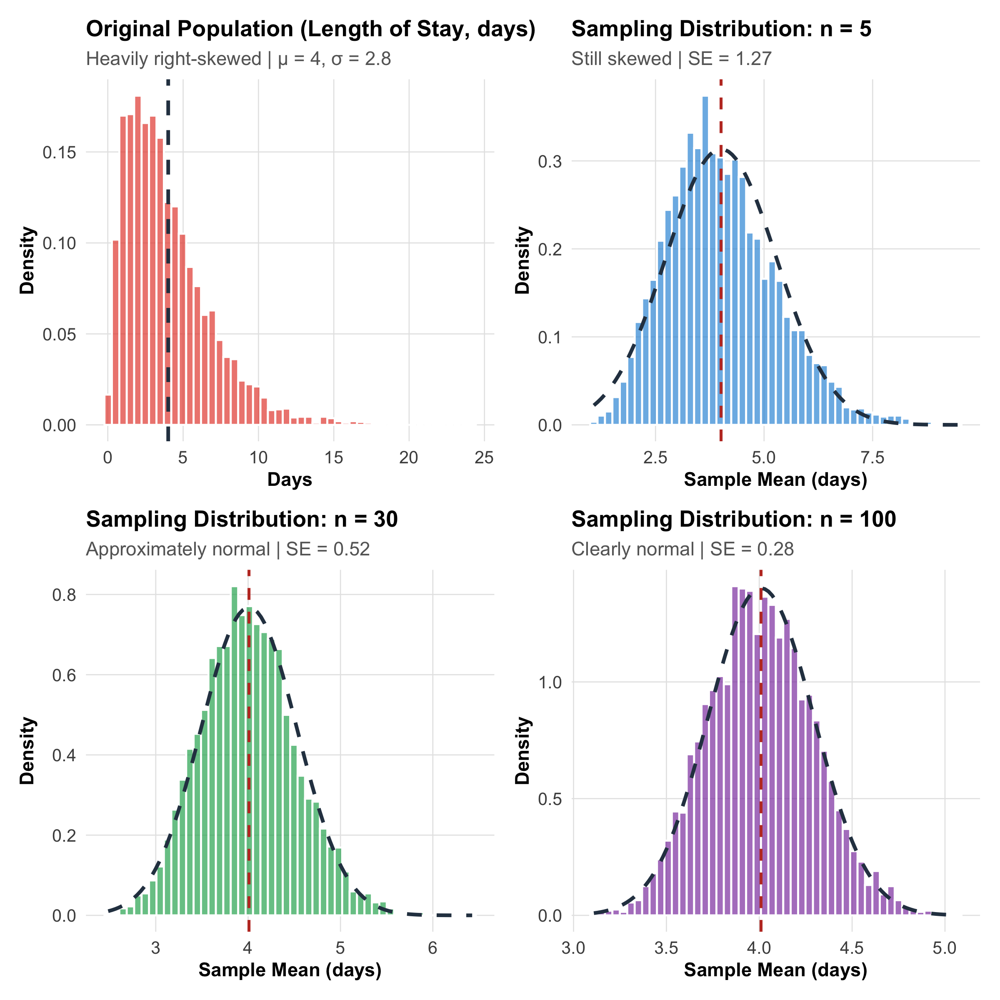
Figure 9.1: Central Limit Theorem demonstrated with right-skewed hospital length-of-stay data. Even though individual stays are heavily skewed (top-left), the distribution of sample means becomes progressively normal as sample size increases.
Three Key Takeaways from the CLT
Why the CLT Matters for Every Clinician
1. Normality is about the sampling distribution, not the data. Your patient data can be wildly skewed — hospital costs, length of stay, viral loads — but the mean of a large enough sample will still follow a normal distribution.
2. The Standard Error shrinks with √n.\[SE = \frac{\sigma}{\sqrt{n}}\] Double the sample size → SE reduces by factor of √2 ≈ 1.41 (not by half!). To halve the SE, you need 4× the sample size. This is the √n law you encountered in Module 6.
3. “Large enough” is context-dependent. The common rule of thumb is n ≥ 30, but this depends on how skewed the population is. For symmetric data, n = 10 may suffice. For extremely skewed data (like healthcare costs), n = 100+ may be needed.
The Standard Error: Connecting CLT to Inference
The standard error (SE) is the bridge between the CLT and everything that follows in this module:
Confidence intervals are built as: estimate ± (critical value × SE)
Test statistics are computed as: (observed - expected) / SE
Sample size formulas (Module 6) manipulate SE to achieve desired precision
Code
n_vals<-seq(5, 500, by =5)se_vals<-pop_sd/sqrt(n_vals)tibble(n =n_vals, SE =se_vals)%>%ggplot(aes(x =n, y =SE))+geom_line(linewidth =1.2, color ="#2980b9")+geom_point(data =tibble( n =c(10, 30, 100, 200, 400), SE =pop_sd/sqrt(c(10, 30, 100, 200, 400)), label =paste0("n=", c(10, 30, 100, 200, 400), "\nSE=", round(pop_sd/sqrt(c(10, 30, 100, 200, 400)), 2))), aes(x =n, y =SE), size =3, color ="#c0392b")+geom_text(data =tibble( n =c(10, 30, 100, 200, 400), SE =pop_sd/sqrt(c(10, 30, 100, 200, 400)), label =paste0("n=", c(10, 30, 100, 200, 400), "\nSE=", round(pop_sd/sqrt(c(10, 30, 100, 200, 400)), 2))), aes(label =label), vjust =-0.8, size =3.5, color ="#2c3e50")+labs(title ="The √n Law: How SE Decreases with Sample Size", subtitle ="Diminishing returns — each additional subject contributes less to precision", x ="Sample Size (n)", y ="Standard Error (SE)")+theme_clean()
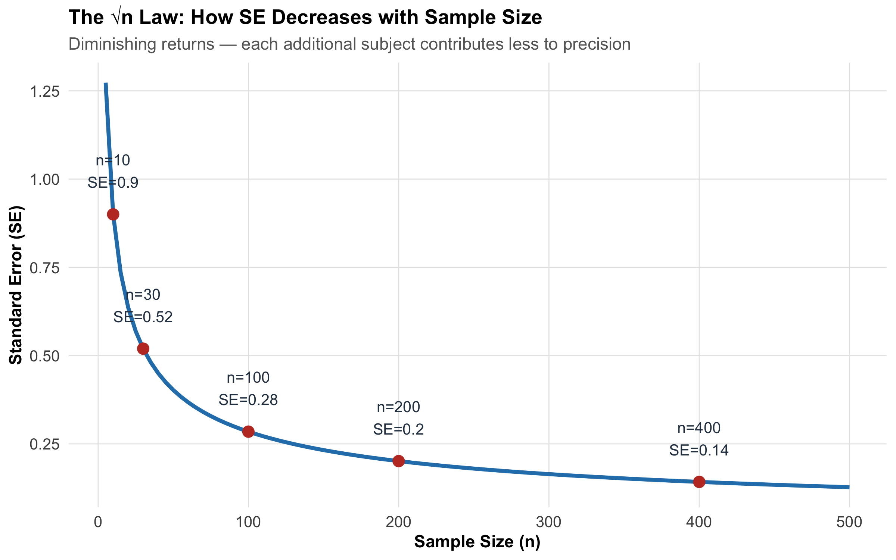
Figure 9.2: Standard Error decreases with sample size following the √n law. Doubling precision requires quadrupling the sample size.
When you measure mean haemoglobin in a sample of 50 anaemic patients and get \(\bar{x}\) = 9.2 g/dL, that single number is a point estimate. But how precise is it? Is the true population mean likely 9.0 or 9.5 or even 8.5?
A confidence interval answers this by providing a range of plausible values for the population parameter, along with a stated level of confidence.
Interpretation: We are 95% confident that the true prevalence of hypertension in this rural population is between 14.2% and 21.8%.
Check: np = 400 × 0.18 = 72 ≥ 5 and n(1−p) = 400 × 0.82 = 328 ≥ 5, so normal approximation is valid.
Correct Interpretation of Confidence Intervals
This is where students and even researchers get confused. Let’s be very precise:
Code
# Simulate 100 CIs from a population with known meantrue_mean<-120true_sd<-15n_sim<-40n_cis<-100set.seed(123)ci_data<-tibble( study =1:n_cis, sample_mean =replicate(n_cis, mean(rnorm(n_sim, true_mean, true_sd))), sample_se =replicate(n_cis, sd(rnorm(n_sim, true_mean, true_sd))/sqrt(n_sim)))%>%mutate( ci_lower =sample_mean-qt(0.975, n_sim-1)*sample_se, ci_upper =sample_mean+qt(0.975, n_sim-1)*sample_se, captures_mean =ci_lower<=true_mean&ci_upper>=true_mean)n_captured<-sum(ci_data$captures_mean)ggplot(ci_data, aes(x =study, y =sample_mean, color =captures_mean))+geom_hline(yintercept =true_mean, linewidth =1.2, color ="#2c3e50", linetype ="solid")+geom_point(size =1.5)+geom_errorbar(aes(ymin =ci_lower, ymax =ci_upper), width =0, linewidth =0.5)+scale_color_manual( values =c("TRUE"="#3498db", "FALSE"="#e74c3c"), labels =c("TRUE"="Captures μ", "FALSE"="Misses μ"), name =NULL)+annotate("text", x =50, y =true_mean+8, label =paste0("True μ = ", true_mean, " mmHg"), fontface ="bold", size =4, color ="#2c3e50")+annotate("text", x =85, y =true_mean-9, label =paste0(n_captured, " out of 100 CIs\ncapture the true mean"), fontface ="bold", size =4, color ="#3498db")+coord_flip()+labs(title ="What Does '95% Confidence' Actually Mean?", subtitle ="Each horizontal line is one 95% CI from a different random sample (n = 40)", x ="Study Number", y ="Systolic Blood Pressure (mmHg)")+theme_clean()+theme(legend.position ="top")
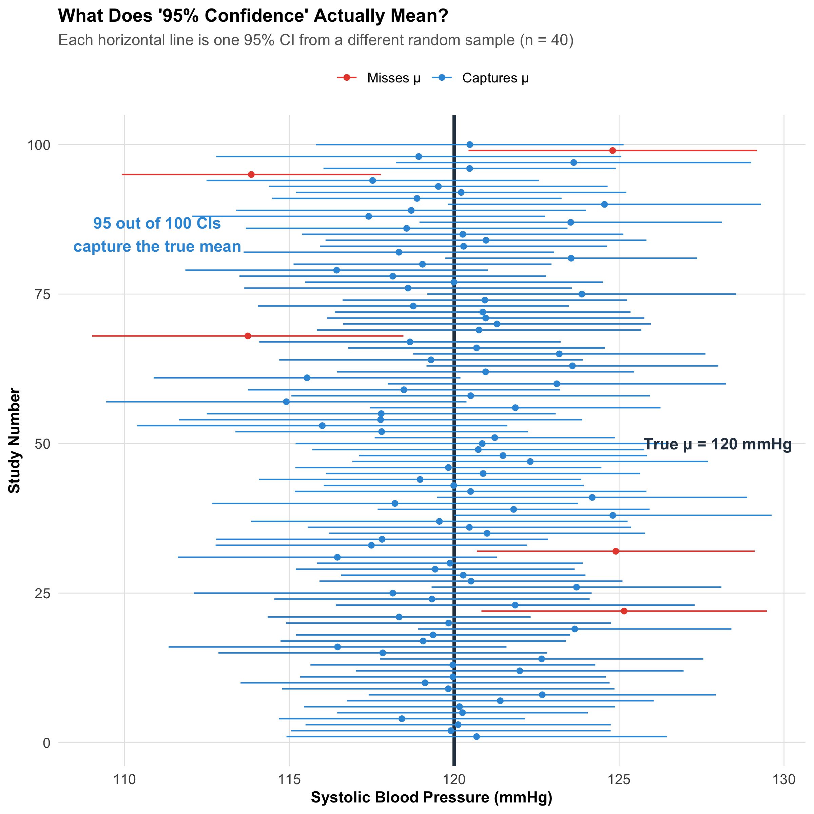
Figure 9.3: 100 simulated 95% CIs from the same population (μ = 120 mmHg). About 95 capture the true mean (blue), while ~5 miss it (red). Each individual CI either contains μ or it doesn’t — there’s no probability about it.
Warning
❌ Wrong: “There is a 95% probability that the true mean is between 148 and 164 mg/dL.”
Why wrong: The true mean is a fixed (unknown) number — it either is or isn’t in the interval. There’s no randomness about the parameter; the randomness is in the sampling process.
❌ Wrong: “95% of all patient values fall between 148 and 164 mg/dL.”
Why wrong: The CI is about the population mean, not about individual values. Individual patient values spread much wider (use prediction intervals for that).
❌ Wrong: “If I repeat the study, there’s a 95% chance the new sample mean falls in this interval.”
Why wrong: A new sample mean would generate its own CI. The 95% refers to the method — if you repeated the whole process 100 times, ~95 of those CIs would capture the true mean.
✅ Correct: “If we were to repeat this study many times, 95% of the calculated intervals would contain the true population mean.”
Or more practically: “We are 95% confident in the procedure that generated this interval.”
Factors Affecting CI Width
Code
# Factor 1: Sample sizen_range<-c(10, 25, 50, 100, 200, 500)ci_by_n<-tibble( n =n_range, width =2*qt(0.975, n_range-1)*(32/sqrt(n_range)), factor ="Sample Size")p_n<-ggplot(ci_by_n, aes(x =factor(n), y =width))+geom_col(fill ="#3498db", alpha =0.7, width =0.6)+geom_text(aes(label =round(width, 1)), vjust =-0.5, size =3.5, fontface ="bold")+labs(title ="Effect of Sample Size on CI Width", subtitle ="SD = 32, 95% confidence | Larger n → narrower CI", x ="Sample Size (n)", y ="CI Width (mg/dL)")+theme_clean()# Factor 2: Variability (SD)sd_range<-c(10, 20, 30, 40, 50)ci_by_sd<-tibble( sd =sd_range, width =2*qt(0.975, 63)*(sd_range/sqrt(64)), factor ="Variability")p_sd<-ggplot(ci_by_sd, aes(x =factor(sd), y =width))+geom_col(fill ="#e74c3c", alpha =0.7, width =0.6)+geom_text(aes(label =round(width, 1)), vjust =-0.5, size =3.5, fontface ="bold")+labs(title ="Effect of Variability (SD) on CI Width", subtitle ="n = 64, 95% confidence | More variable data → wider CI", x ="Standard Deviation", y ="CI Width (mg/dL)")+theme_clean()# Factor 3: Confidence levelconf_levels<-c(0.80, 0.90, 0.95, 0.99)z_vals<-qnorm(1-(1-conf_levels)/2)ci_by_conf<-tibble( conf =paste0(conf_levels*100, "%"), width =2*z_vals*(32/sqrt(64)), factor ="Confidence Level")p_conf<-ggplot(ci_by_conf, aes(x =conf, y =width))+geom_col(fill ="#27ae60", alpha =0.7, width =0.6)+geom_text(aes(label =round(width, 1)), vjust =-0.5, size =3.5, fontface ="bold")+labs(title ="Effect of Confidence Level on CI Width", subtitle ="n = 64, SD = 32 | Higher confidence → wider CI (trade-off!)", x ="Confidence Level", y ="CI Width (mg/dL)")+theme_clean()p_n/p_sd/p_conf
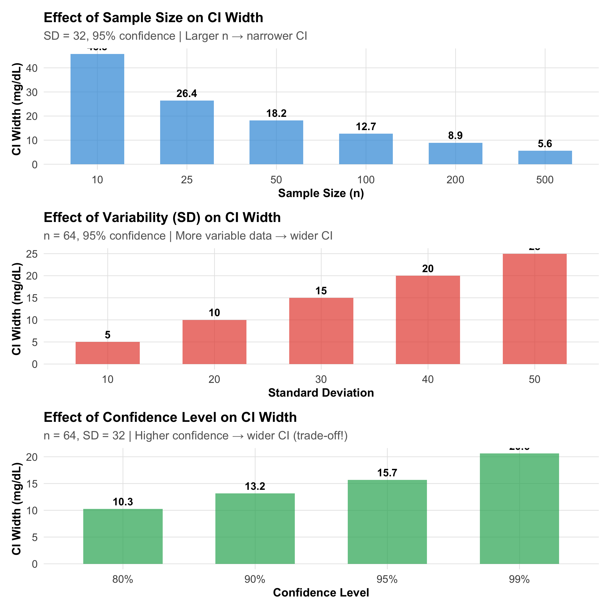
Figure 9.4: Three factors that determine CI width: sample size, variability, and confidence level. Narrower CIs indicate more precise estimates.
The only free lunch is reducing measurement error. The other two involve real trade-offs. This is why sample size planning (Module 6) is so important — you choose n to achieve the CI width you need.
9.5 Section 3: The Logic of Hypothesis Testing
Proof by Contradiction (Reductio ad Absurdum)
Hypothesis testing is fundamentally a logical proof by contradiction. You’ve encountered this in mathematics:
To prove a statement is true, assume it’s false and show this leads to absurdity.
Example (Mathematical): To prove √2 is irrational, assume it’s rational (= p/q), derive p² = 2q², then show this is impossible.
Example (Statistical): To test whether a new antiarrhythmic drug works, we assume it doesn’t (null hypothesis) and ask: “How unlikely is our observed data if this assumption were true?” If our data seem very unlikely under this assumption, we reject the assumption and conclude the drug probably works.
The Two-Hypothesis Framework
Code
x<-seq(-4, 5, length.out =1000)h0<-dnorm(x, mean =0, sd =1)h1<-dnorm(x, mean =2, sd =1)critical_z<-qnorm(0.95)df_main<-tibble(x =x, h0 =h0, h1 =h1)df_type1<-df_main%>%filter(x>=critical_z)df_type2<-df_main%>%filter(x<critical_z)ggplot(df_main, aes(x =x))+geom_area(aes(y =h0, fill ="H₀ (Drug has no effect)"), alpha =0.5)+geom_area(aes(y =h1, fill ="H₁ (Drug has effect)"), alpha =0.5)+geom_vline(xintercept =critical_z, linetype ="dashed", color ="red", linewidth =1)+geom_area(data =df_type1, aes(x =x, y =h0, fill ="Type I Error (α)"), alpha =0.8)+geom_area(data =df_type2, aes(x =x, y =h1, fill ="Type II Error (β)"), alpha =0.8)+scale_fill_manual(values =c("H₀ (Drug has no effect)"="#3498db","H₁ (Drug has effect)"="#e74c3c","Type I Error (α)"="#c0392b","Type II Error (β)"="#f39c12"))+labs(title ="Hypothesis Testing: Two Overlapping Distributions", subtitle ="α = 0.05, one-tailed test | The overlap creates the possibility of errors", x ="Test Statistic (z)", y ="Probability Density", fill =NULL)+annotate("text", x =critical_z+0.5, y =0.35, label ="Reject H₀\n(α = 0.05)", size =4, color ="darkred", fontface ="bold")+annotate("text", x =-2, y =0.35, label ="Fail to Reject H₀", size =4, color ="darkgreen", fontface ="bold")+theme_clean()+theme(legend.position ="bottom", legend.text =element_text(size =9))
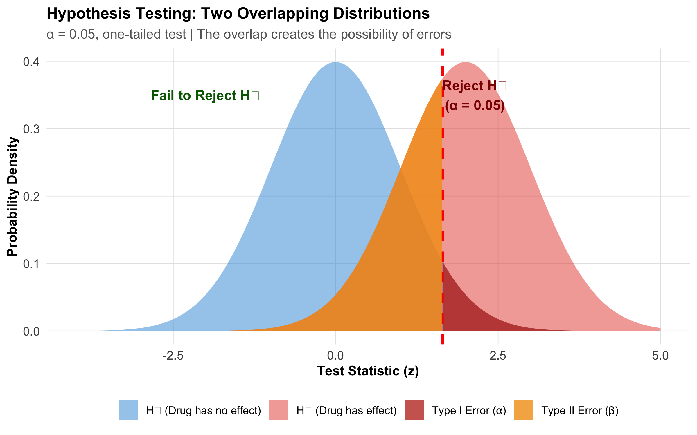
Figure 9.5: The two overlapping sampling distributions under H₀ (no effect) and H₁ (real effect). The critical value divides the decision space into ‘reject’ and ‘fail to reject’ regions.
Key Definitions:
H₀ (Null Hypothesis): The claim of “no effect” or “no difference.” Examples: New drug = standard drug; μ = 120 mmHg; Treatment effect = 0
H₁ (Alternative Hypothesis): The claim we want to support — that something is different. Examples: New drug ≠ standard drug (two-tailed); New drug > standard drug (one-tailed)
Crucial Point: We never “prove” H₁; we only decide whether H₀ is plausible.
One-Tailed vs Two-Tailed Tests
Code
x<-seq(-4, 4, length.out =1000)y<-dnorm(x)df_tail<-tibble(x =x, y =y)p_two<-ggplot(df_tail, aes(x =x, y =y))+geom_area(fill ="lightblue", alpha =0.7)+geom_area(data =df_tail%>%filter(x>1.96), fill ="red", alpha =0.8)+geom_area(data =df_tail%>%filter(x<-1.96), fill ="red", alpha =0.8)+geom_vline(xintercept =c(-1.96, 1.96), linetype ="dashed", color ="darkred")+labs(title ="Two-Tailed Test (α = 0.05)", subtitle ="0.025 in each tail | Critical z = ±1.96", x ="Test Statistic", y ="Density")+theme_clean()+theme(axis.text.y =element_blank(), axis.ticks.y =element_blank())p_one<-ggplot(df_tail, aes(x =x, y =y))+geom_area(fill ="lightblue", alpha =0.7)+geom_area(data =df_tail%>%filter(x>1.645), fill ="red", alpha =0.8)+geom_vline(xintercept =1.645, linetype ="dashed", color ="darkred")+labs(title ="One-Tailed Test (α = 0.05)", subtitle ="0.05 in right tail only | Critical z = 1.645", x ="Test Statistic", y ="Density")+theme_clean()+theme(axis.text.y =element_blank(), axis.ticks.y =element_blank())p_two/p_one
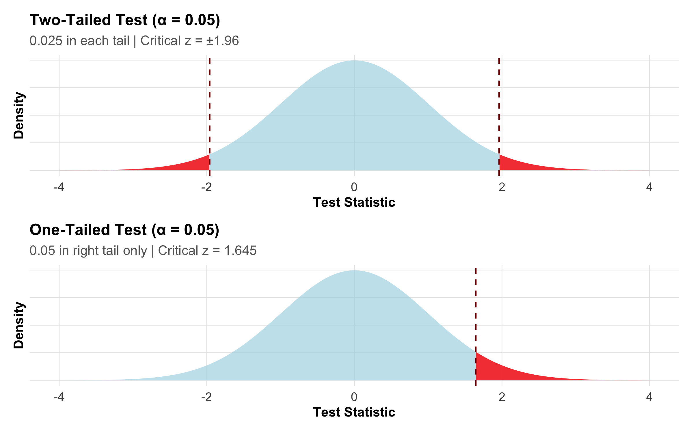
Figure 9.6: Two-tailed test splits α across both tails (more conservative); one-tailed test puts all α in one tail (more power but riskier).
When Should You Use One-Tailed Tests?
Only if you have a strong prior hypothesis about direction
Only if you genuinely couldn’t care about differences in the opposite direction
Example: Testing if a safety intervention reduces (not increases) medication errors
Caution: One-tailed tests are often used to achieve p < 0.05 more easily — this is a form of p-hacking and is unethical
Recommendation: Pre-specify your test direction in your study protocol before collecting data. Two-tailed is the default.
9.6 Section 4: Test Statistics and P-Values
What Is a Test Statistic?
A test statistic is a number computed from your sample data that summarizes the strength of evidence against H₀. Thanks to the CLT, we know how these statistics should be distributed if H₀ is true.
Code
test_stats<-tibble( Scenario =c("One sample mean vs known value","Two independent means","Paired means","One proportion vs known value","Two proportions"), `Test Statistic` =c("t = (x̄ - μ₀) / (s / √n)","t = (x̄₁ - x̄₂) / SE_diff","t = (x̄_diff - 0) / (s_diff / √n)","z = (p̂ - p₀) / √[p₀(1-p₀)/n]","z = (p̂₁ - p̂₂) / SE_diff"), Distribution =c("t with (n-1) df","t with (n₁+n₂-2) df","t with (n-1) df","Normal (z)","Normal (z)"))kable(test_stats, format ="html")%>%kable_styling(full_width =TRUE, font_size =11)%>%column_spec(1, width ="30%")%>%column_spec(2, width ="40%")%>%column_spec(3, width ="30%")
Table 9.1: Common test statistics and their distributions
Scenario
Test Statistic
Distribution
One sample mean vs known value
t = (x̄ - μ₀) / (s / √n)
t with (n-1) df
Two independent means
t = (x̄₁ - x̄₂) / SE_diff
t with (n₁+n₂-2) df
Paired means
t = (x̄_diff - 0) / (s_diff / √n)
t with (n-1) df
One proportion vs known value
z = (p̂ - p₀) / √[p₀(1-p₀)/n]
Normal (z)
Two proportions
z = (p̂₁ - p̂₂) / SE_diff
Normal (z)
Notice the common pattern: Every test statistic has the form:
This is always (signal − noise) / uncertainty. The CLT tells us this ratio follows a known distribution.
What Is a P-Value? (And What It’s NOT)
Tip
The p-value is the probability of observing a test statistic as extreme or more extreme than what we actually observed, assuming H₀ is true.
\[\text{p-value} = P(\text{observed test statistic or more extreme} \mid H_0 \text{ is true})\]
Key phrase: “given H₀ is true” — this is conditional on H₀, not on your data.
Code
x<-seq(-4, 4, length.out =1000)y<-dnorm(x)obs_stat<-2.5df_pval<-tibble(x =x, y =y)df_pval_shade<-df_pval%>%filter(abs(x)>=abs(obs_stat))ggplot(df_pval, aes(x =x, y =y))+geom_area(fill ="lightblue", alpha =0.7)+geom_area(data =df_pval_shade, fill ="#e74c3c", alpha =0.8)+geom_vline(xintercept =obs_stat, linetype ="solid", color ="darkred", linewidth =1.2)+geom_vline(xintercept =-obs_stat, linetype ="solid", color ="darkred", linewidth =1.2)+annotate("text", x =obs_stat, y =-0.04, label =paste("Observed\nz =", obs_stat), hjust =0.5, size =4, fontface ="bold")+annotate("label", x =3.5, y =0.2, label ="Red area = p-value\n≈ 0.012 (two-tailed)\nIf p < 0.05, reject H₀", hjust =0.5, size =3.5, color ="darkred", fontface ="bold", fill ="white", label.size =0.5)+labs(title ="P-Value: Visualized", subtitle ="The red area is the probability of this extreme a result under H₀", x ="Test Statistic", y ="Probability Density")+theme_clean()+theme(axis.text.y =element_blank(), axis.ticks.y =element_blank())
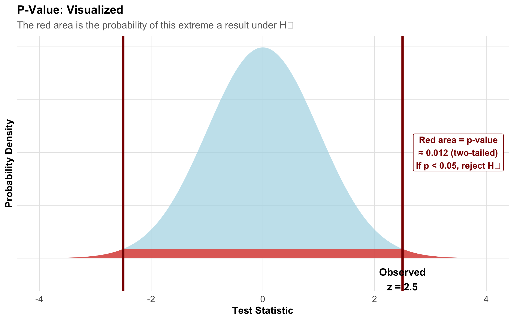
Figure 9.7: The p-value is the red shaded area — the probability of getting a result this extreme (or more) if H₀ were true.
Six Common Misconceptions About P-Values
Warning
“p = 0.03 means there’s a 3% chance the null hypothesis is true.”
✅ Correct: p = 0.03 means: IF H₀ were true, there would be a 3% chance of observing data this extreme. We don’t know the probability that H₀ is true — that depends on prior knowledge (Bayesian thinking).
Warning
“p = 0.03 means the result is 97% likely to be true.”
✅ Correct: The p-value says nothing about the probability your result is “true.” The probability your findings replicate depends on effect size, sample size, and study design — not on p-value alone.
Warning
“p = 0.06 means the result is ‘marginally significant’ and trending toward significance.”
✅ Correct: p = 0.06 means we fail to reject H₀ at α = 0.05. The difference between p = 0.04 and p = 0.06 is arbitrary and not meaningful. Report the actual p-value and effect size; avoid the word “trend.”
Warning
“A non-significant result (p = 0.15) means the treatment has no effect.”
✅ Correct: p = 0.15 means we don’t have enough evidence to reject H₀. The effect might be real but small, or the sample size too small to detect it. Always examine the effect size and confidence interval. Absence of evidence is not evidence of absence.
Warning
“If my p-value is 0.001, I should be very confident in my result.”
✅ Correct: A very small p-value only means the data are unlikely under H₀. It says nothing about whether your study had selection bias, confounding, or measurement error. A biased study with p = 0.001 is still biased.
Warning
“Multiple studies all with p < 0.05 provide strong evidence.”
✅ Correct: If you run 20 independent studies, you expect ~1 to have p < 0.05 by chance alone (Type I error). This is the multiple testing problem — discussed later in this module.
The ASA Statement on P-Values (2016)
In 2016, the American Statistical Association released a landmark statement clarifying p-value interpretation. These 6 principles are heavily tested in NEET PG:
Code
asa_principles<-tribble(~Principle, ~`What It Means`, ~`Clinical Implication`,"1. P-values measure incompatibility with H₀","Small p means data are unusual IF H₀ is true","Does NOT measure probability H₀ is true","2. P-values do NOT measure effect size","p = 0.0001 could be a tiny effect; p = 0.10 could be large","Always report CIs and effect sizes","3. P-values do NOT measure strength of evidence","Strong evidence comes from effect size, consistency, mechanism","p-value is just one piece of the puzzle","4. Scientific conclusions require more than p < 0.05","Binary significant/not-significant thinking is outdated","Context: prior evidence, clinical importance, study design","5. P-hacking invalidates reported p-values","Testing many hypotheses inflates false positives","Pre-register analyses to avoid selective reporting","6. Properly designed studies yield informative p-values","Good design + correct reporting = useful evidence","But replicate! One study is never sufficient")kable(asa_principles, format ="html")%>%kable_styling(full_width =TRUE, font_size =10)%>%column_spec(1, width ="22%")%>%column_spec(2, width ="38%")%>%column_spec(3, width ="40%")
Table 9.2: ASA’s Six Principles on P-Values (2016)
Principle
What It Means
Clinical Implication
1. P-values measure incompatibility with H₀
Small p means data are unusual IF H₀ is true
Does NOT measure probability H₀ is true
2. P-values do NOT measure effect size
p = 0.0001 could be a tiny effect; p = 0.10 could be large
Always report CIs and effect sizes
3. P-values do NOT measure strength of evidence
Strong evidence comes from effect size, consistency, mechanism
p-value is just one piece of the puzzle
4. Scientific conclusions require more than p < 0.05
Binary significant/not-significant thinking is outdated
Context: prior evidence, clinical importance, study design
5. P-hacking invalidates reported p-values
Testing many hypotheses inflates false positives
Pre-register analyses to avoid selective reporting
6. Properly designed studies yield informative p-values
Good design + correct reporting = useful evidence
But replicate! One study is never sufficient
9.7 Section 5: Type I Error, Type II Error, and Power
This section is deliberately detailed because these concepts confuse students more than almost anything else in biostatistics. Take your time here.
The Four Possible Outcomes of a Hypothesis Test
Every hypothesis test ends in one of four situations — a 2×2 table of reality vs. our decision:
Code
outcomes<-tibble( ` ` =c("**H₀ is actually TRUE**\n(Drug doesn't work)", "**H₀ is actually FALSE**\n(Drug actually works)"), `We Reject H₀ (declare 'significant')` =c("**TYPE I ERROR (α)**\n❌ False Positive\nWe incorrectly say drug works\nProbability = α (usually 0.05)","**CORRECT DECISION** ✅\nTrue Positive\nWe correctly detect the effect\nProbability = 1 − β (Power)"), `We Fail to Reject H₀ (declare 'not significant')` =c("**CORRECT DECISION** ✅\nTrue Negative\nWe correctly say no effect\nProbability = 1 − α","**TYPE II ERROR (β)**\n❌ False Negative\nWe miss a real treatment effect\nProbability = β (usually 0.20)"))kable(outcomes, format ="html", escape =FALSE)%>%kable_styling(full_width =TRUE, font_size =11)%>%column_spec(1, width ="22%")%>%column_spec(2, width ="39%")%>%column_spec(3, width ="39%")%>%row_spec(0, background ="#3498db", color ="white", bold =TRUE)
Table 9.3: The four possible outcomes of a hypothesis test
We Reject H₀ (declare 'significant')
We Fail to Reject H₀ (declare 'not significant')
**H₀ is actually TRUE** (Drug doesn't work)
**TYPE I ERROR (α)** ❌ False Positive We incorrectly say drug works Probability = α (usually 0.05)
**CORRECT DECISION** ✅ True Negative We correctly say no effect Probability = 1 − α
**H₀ is actually FALSE** (Drug actually works)
**CORRECT DECISION** ✅ True Positive We correctly detect the effect Probability = 1 − β (Power)
**TYPE II ERROR (β)** ❌ False Negative We miss a real treatment effect Probability = β (usually 0.20)
Type I Error (α): The False Positive — Detailed
Important
Definition: Rejecting H₀ when it is actually true — concluding an effect exists when it doesn’t.
Probability: Set by the researcher, conventionally α = 0.05 (5%)
What this means in practice: If you set α = 0.05 and the drug truly has NO effect, there is still a 5% chance your study will declare it “significant.” Over many studies, 1 in 20 will produce a false positive purely by chance.
Clinical scenarios where Type I error is dangerous:
Approving an ineffective drug: A new antibiotic is declared effective (p = 0.04) against drug-resistant TB. In reality, it has no advantage. Patients receive it instead of proven therapy, and some die from inadequate treatment.
Unnecessary surgery: A screening test for a rare cancer shows a “significant” association with a biomarker (p = 0.03). Thousands of patients undergo invasive biopsies for a spurious association.
Policy changes based on false findings: A public health study claims a “significant” link between a food additive and childhood asthma (p = 0.048). The government bans the additive, causing economic disruption, when the finding was a statistical fluke.
What increases the risk of Type I error:
Multiple testing without correction
P-hacking (testing many hypotheses and reporting only significant ones)
Flexible analysis plans (not pre-registered)
Small, underpowered studies that rely on chance findings
Type II Error (β): The False Negative — Detailed
Important
Definition: Failing to reject H₀ when it is actually false — missing a real effect.
Probability: β (depends on effect size, sample size, and variability). Convention is β ≤ 0.20.
What this means in practice: If a drug truly works and β = 0.20, there is a 20% chance your study will fail to detect the effect and declare it “not significant.”
Clinical scenarios where Type II error is dangerous:
Missing an effective treatment: A new immunotherapy reduces pancreatic cancer mortality by 15% (clinically important), but the trial enrolled only 80 patients. The study reports p = 0.12 and concludes “no significant benefit.” The drug is shelved, and patients lose access to an effective therapy.
Declaring equivalence prematurely: A trial comparing two antihypertensives finds p = 0.35 with n = 40 per group. The authors conclude “the drugs are equivalent” — but the study was too small to detect a real difference.
Stopping a trial too early: An interim analysis of a sepsis drug shows p = 0.08. The trial is stopped for “futility,” but with 6 more months of enrollment, p would have reached 0.01.
What increases the risk of Type II error:
Small sample size (the #1 cause)
Small effect size (hard to detect subtle effects)
High variability in the data
Stringent α (e.g., using α = 0.01 instead of 0.05)
The Clinical Analogy: Diagnostic Test Parallel
The concepts from Module 5 (diagnostic tests) map directly onto hypothesis testing errors:
Code
parallel<-tibble( Concept =c("Type I Error (α)", "Type II Error (β)", "Power (1 − β)", "Significance Level (α)"), `Hypothesis Testing` =c("Declaring drug works when it doesn't","Missing a drug that actually works","Correctly detecting a working drug","Threshold for declaring significance"), `Diagnostic Testing Parallel` =c("False Positive (FP) — healthy person tests positive","False Negative (FN) — sick person tests negative","Sensitivity — correctly detecting disease","1 − Specificity"))kable(parallel, format ="html")%>%kable_styling(full_width =TRUE, font_size =11)%>%column_spec(1, width ="20%")%>%column_spec(2, width ="40%")%>%column_spec(3, width ="40%")
Table 9.4: Hypothesis testing errors parallel diagnostic test errors
Concept
Hypothesis Testing
Diagnostic Testing Parallel
Type I Error (α)
Declaring drug works when it doesn't
False Positive (FP) — healthy person tests positive
Type II Error (β)
Missing a drug that actually works
False Negative (FN) — sick person tests negative
Power (1 − β)
Correctly detecting a working drug
Sensitivity — correctly detecting disease
Significance Level (α)
Threshold for declaring significance
1 − Specificity
This analogy helps because you already understand sensitivity and specificity from Module 5. Power IS sensitivity for hypothesis tests — the ability to detect a true effect when one exists.
Power (1 − β): The Ability to Detect Real Effects
Tip
Definition: The probability of correctly rejecting H₀ when it is false — correctly detecting a real effect.
Gold standard: Power ≥ 0.80 (80%) before conducting a study.
Meaning: With 80% power, if a drug truly works, you have an 80% chance of detecting it (and a 20% chance of missing it).
What Determines Power?
Code
# Power vs effect sizeeffect_sizes<-seq(0.1, 1.5, by =0.05)power_by_effect<-sapply(effect_sizes, function(d){pnorm(d*sqrt(64/2)-qnorm(0.975))})p_effect<-tibble(d =effect_sizes, power =power_by_effect)%>%ggplot(aes(x =d, y =power))+geom_line(linewidth =1.2, color ="#3498db")+geom_hline(yintercept =0.80, linetype ="dashed", color ="#c0392b", linewidth =0.8)+geom_hline(yintercept =0.90, linetype ="dashed", color ="#e67e22", linewidth =0.8)+scale_y_continuous(labels =percent_format(), limits =c(0, 1))+annotate("text", x =1.3, y =0.82, label ="80% Power", color ="#c0392b", fontface ="bold")+annotate("text", x =1.3, y =0.92, label ="90% Power", color ="#e67e22", fontface ="bold")+annotate("text", x =0.2, y =0.6, label ="Small\neffect", size =3, color ="gray50")+annotate("text", x =0.5, y =0.6, label ="Medium\neffect", size =3, color ="gray50")+annotate("text", x =0.8, y =0.6, label ="Large\neffect", size =3, color ="gray50")+labs(title ="Power vs Effect Size (Cohen's d)", subtitle ="n = 64 per group, α = 0.05 (two-tailed)", x ="Cohen's d (Effect Size)", y ="Statistical Power")+theme_clean()# Power vs sample sizesample_sizes<-seq(10, 300, by =5)power_by_n<-sapply(sample_sizes, function(n){pnorm(0.5*sqrt(n/2)-qnorm(0.975))})p_samplesize<-tibble(n =sample_sizes, power =pmin(power_by_n, 1))%>%ggplot(aes(x =n, y =power))+geom_line(linewidth =1.2, color ="#e74c3c")+geom_hline(yintercept =0.80, linetype ="dashed", color ="darkgreen", linewidth =0.8)+scale_y_continuous(labels =percent_format(), limits =c(0, 1))+annotate("text", x =220, y =0.82, label ="80% Power", color ="darkgreen", fontface ="bold")+labs(title ="Power vs Sample Size (per group)", subtitle ="Cohen's d = 0.5 (medium effect), α = 0.05 (two-tailed)", x ="Sample Size (per group)", y ="Statistical Power")+theme_clean()p_effect/p_samplesize
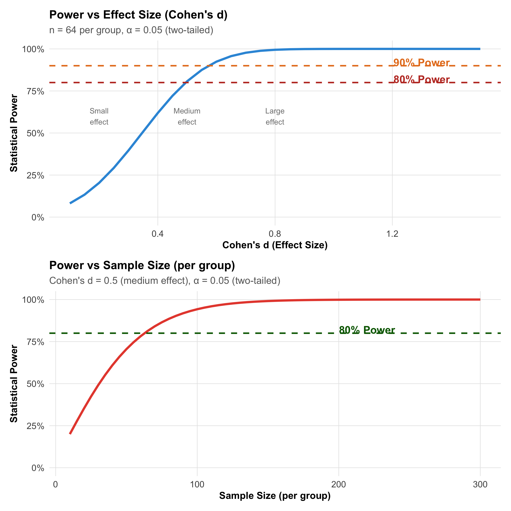
Figure 9.8: Power increases with effect size and sample size. The dashed lines mark the conventional 80% and 90% power thresholds.
Code
power_det<-tribble(~Factor, ~`Effect on Power`, ~Example,"Sample Size (n)", "↑ n → ↑ Power", "n = 50 gives 70% power; n = 100 gives 85% power for same effect","Effect Size (δ)", "↑ Effect → ↑ Power", "d = 0.2 (small) needs ~400/group; d = 0.8 (large) needs ~25/group","Significance Level (α)", "↓ α → ↓ Power", "α = 0.01 needs larger n than α = 0.05 for same power","Variability (σ)", "↑ σ → ↓ Power", "Noisy data needs larger n to detect the same effect","Test Direction", "One-tailed → ↑ Power", "~10% more power than two-tailed (but use with caution!)")kable(power_det, format ="html")%>%kable_styling(full_width =TRUE, font_size =11)%>%column_spec(1, width ="20%")%>%column_spec(2, width ="25%")%>%column_spec(3, width ="55%")
Table 9.5: Factors that determine statistical power
Factor
Effect on Power
Example
Sample Size (n)
↑ n → ↑ Power
n = 50 gives 70% power; n = 100 gives 85% power for same effect
Effect Size (δ)
↑ Effect → ↑ Power
d = 0.2 (small) needs ~400/group; d = 0.8 (large) needs ~25/group
Significance Level (α)
↓ α → ↓ Power
α = 0.01 needs larger n than α = 0.05 for same power
Variability (σ)
↑ σ → ↓ Power
Noisy data needs larger n to detect the same effect
Test Direction
One-tailed → ↑ Power
~10% more power than two-tailed (but use with caution!)
The α–β Trade-off
Decreasing α (making the test more stringent) increases β
You cannot simultaneously minimize both errors with the same sample
Solution: Increase sample size! More data reduces both errors
Strategy: Choose a target power (80% is standard) and calculate the required sample size before the study — this is covered in detail in Module 6
Rule of thumb (the 4:1 trade-off): Convention sets α = 0.05 and β = 0.20, meaning we consider a false positive 4× more serious than a false negative. This is because a Type I error leads to adopting an ineffective treatment, while a Type II error means continuing the status quo.
Interactive Visualization: How Moving the Critical Value Affects α and β
Code
# Show three different critical valuesx<-seq(-4, 6, length.out =1000)plot_alpha_beta<-function(crit, alpha_label){h0<-dnorm(x, 0, 1)h1<-dnorm(x, 2.5, 1)df<-tibble(x =x, h0 =h0, h1 =h1)alpha_area<-df%>%filter(x>=crit)beta_area<-df%>%filter(x<crit)alpha_val<-round(1-pnorm(crit), 3)beta_val<-round(pnorm(crit, mean =2.5), 3)power_val<-round(1-beta_val, 3)ggplot(df, aes(x =x))+geom_line(aes(y =h0), color ="#3498db", linewidth =1)+geom_line(aes(y =h1), color ="#e74c3c", linewidth =1)+geom_area(data =alpha_area, aes(x =x, y =h0), fill ="#c0392b", alpha =0.4)+geom_area(data =beta_area, aes(x =x, y =h1), fill ="#f39c12", alpha =0.4)+geom_vline(xintercept =crit, linetype ="dashed", linewidth =1, color ="#2c3e50")+annotate("label", x =-2.5, y =0.35, label =paste0("α = ", alpha_val), fill ="#fadbd8", color ="#c0392b", fontface ="bold", size =4)+annotate("label", x =4.5, y =0.35, label =paste0("β = ", beta_val, "\nPower = ", power_val), fill ="#fdebd0", color ="#e67e22", fontface ="bold", size =3.5)+labs(title =paste0(alpha_label, ": Critical Value = ", crit), x ="Test Statistic", y ="Density")+theme_clean()+theme(axis.text.y =element_blank())}p1<-plot_alpha_beta(1.0, "Liberal threshold")p2<-plot_alpha_beta(1.645, "Standard (α ≈ 0.05)")p3<-plot_alpha_beta(2.33, "Stringent threshold")p1/p2/p3
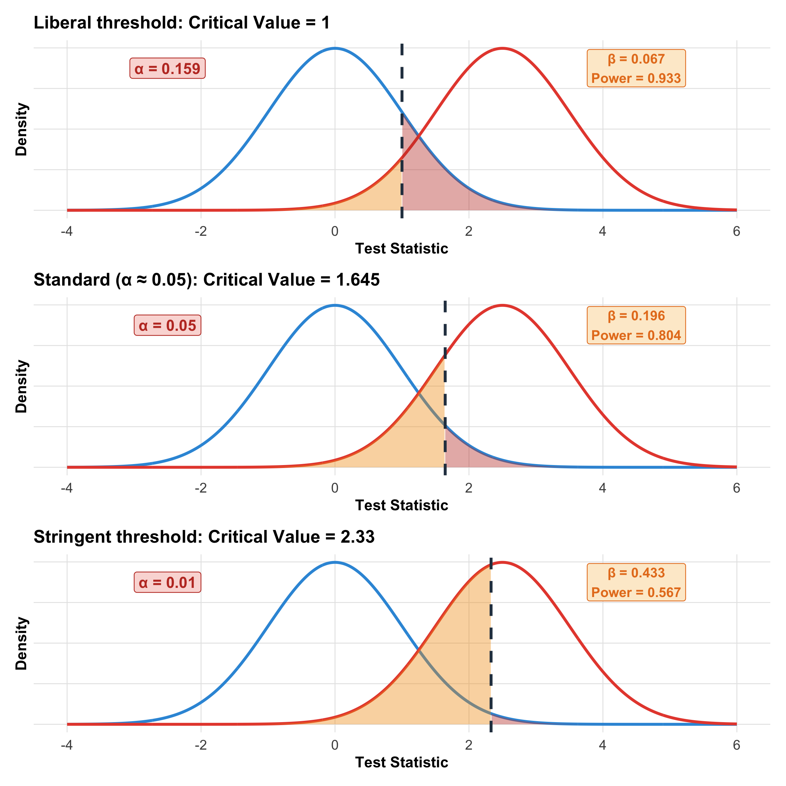
Figure 9.9: The fundamental trade-off: moving the critical value left decreases β (fewer misses) but increases α (more false alarms), and vice versa.
9.8 Section 6: Statistical Significance vs Clinical Significance
This is the most clinically important distinction in biostatistics — and the core message of the clinical hook at the start.
The 2×2 Framework
Code
grid_data<-tibble( x =c(1, 2, 1, 2), y =c(2, 2, 1, 1), label =c("MISSED FINDING\nClinically Important\nBUT Study Underpowered\n(Need larger trial)","IDEAL FINDING\nStatistically +\nClinically Significant\n(Change practice!)","CORRECT NULL\nNeither Significant\n(No effect to report)","SPURIOUS FINDING\nStatistically Significant\nBUT Clinically Trivial\n(Don't change practice)"), color =c("#f39c12", "#27ae60", "#3498db", "#e74c3c"))ggplot(grid_data, aes(x =x, y =y))+geom_tile(aes(fill =color), width =0.9, height =0.9, color ="white", linewidth =2)+scale_fill_identity()+geom_text(aes(label =label), size =4, fontface ="bold", color ="white", lineheight =1.1)+scale_x_continuous(breaks =c(1, 2), labels =c("Not\nSignificant", "Statistically\nSignificant"), position ="top")+scale_y_continuous(breaks =c(1, 2), labels =c("Not Clinically\nImportant", "Clinically\nImportant"))+labs(title ="Statistical vs Clinical Significance: The 2×2 Framework", subtitle ="Where does your study finding fall?", x ="Statistical Significance (p-value)", y ="Clinical Importance (Effect Size)")+theme_clean()+theme( axis.text =element_text(size =11, face ="bold"), axis.title =element_text(size =12, face ="bold"), panel.grid =element_blank(), legend.position ="none")
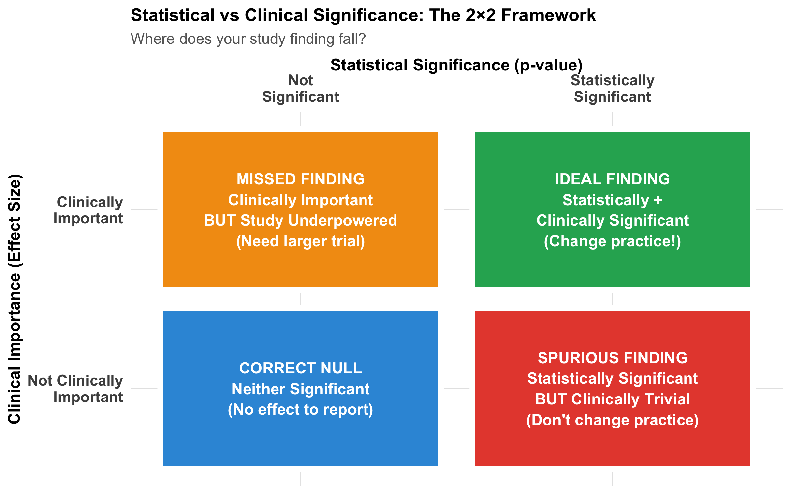
Figure 9.10: The four possible scenarios when interpreting research findings. Only the top-right quadrant (both statistically and clinically significant) should change clinical practice.
Real-World Examples from Indian Medicine
Code
examples<-tribble(~Study, ~Finding, ~n, ~Effect, ~`p-value`, ~MCID, ~Verdict,"Hypertension Trial","New ACE-I reduces SBP by 2 mmHg vs standard","10,000","2 mmHg","0.03","5–10 mmHg","Stat YES, Clinical NO ❌","Sepsis Trial","New antibiotic reduces 28-day mortality by 12%","200","12%","0.001","≥5%","Stat YES, Clinical YES ✅","Diabetes Trial","New metformin formulation reduces HbA1c by 0.4%","150","0.4%","0.12","0.5%","Stat NO, Clinical borderline ❓","Anticoagulation RCT","DOAC reduces stroke by 0.5% vs warfarin","3,000","0.5%","0.001","≥2%","Stat YES, Clinical NO ❌")kable(examples, format ="html")%>%kable_styling(full_width =TRUE, font_size =10)%>%column_spec(1, width ="14%")%>%column_spec(2, width ="22%")%>%column_spec(3, width ="8%")%>%column_spec(4, width ="10%")%>%column_spec(5, width ="8%")%>%column_spec(6, width ="12%")%>%column_spec(7, width ="18%")
Table 9.6: Four scenarios illustrating the distinction between statistical and clinical significance
Study
Finding
n
Effect
p-value
MCID
Verdict
Hypertension Trial
New ACE-I reduces SBP by 2 mmHg vs standard
10,000
2 mmHg
0.03
5–10 mmHg
Stat YES, Clinical NO ❌
Sepsis Trial
New antibiotic reduces 28-day mortality by 12%
200
12%
0.001
≥5%
Stat YES, Clinical YES ✅
Diabetes Trial
New metformin formulation reduces HbA1c by 0.4%
150
0.4%
0.12
0.5%
Stat NO, Clinical borderline ❓
Anticoagulation RCT
DOAC reduces stroke by 0.5% vs warfarin
3,000
0.5%
0.001
≥2%
Stat YES, Clinical NO ❌
Minimal Clinically Important Difference (MCID)
The MCID is the smallest effect size that patients would consider meaningful. Always specify it before the trial.
Common MCIDs (from literature):
Blood pressure reduction: 5–10 mmHg systolic
HbA1c reduction (diabetes): 0.5%
Pain scale (0–100 VAS): 10–15 points
Mortality reduction: 5% absolute reduction
Quality of life (EQ-5D): 0.05–0.08 units
Key principle: A statistically significant result that falls below the MCID is clinically irrelevant — no matter how small the p-value.
9.9 Section 7: Effect Size and Cohen’s d
Why Effect Size Matters More Than P-Values
The p-value tells you whether an effect exists (binary: yes/no). The effect size tells you how big the effect is (continuous: clinically useful information).
Code
plot_effect<-function(d, title_text){x<-seq(-4, 4+d, length.out =1000)h0<-dnorm(x, 0, 1)h1<-dnorm(x, d, 1)tibble(x, h0, h1)%>%ggplot(aes(x =x))+geom_area(aes(y =h0), fill ="#3498db", alpha =0.5)+geom_area(aes(y =h1), fill ="#e74c3c", alpha =0.5)+annotate("text", x =-1.5, y =0.35, label ="Control", size =4, fontface ="bold", color ="#2471a3")+annotate("text", x =d+1, y =0.35, label ="Treatment", size =4, fontface ="bold", color ="#c0392b")+labs(title =title_text, x ="Standardized Score", y ="Density")+theme_clean()+theme(axis.text.y =element_blank())}p1<-plot_effect(0.2, "Small Effect (d = 0.2) — e.g., aspirin for mild headache")p2<-plot_effect(0.5, "Medium Effect (d = 0.5) — e.g., ACE inhibitor for hypertension")p3<-plot_effect(0.8, "Large Effect (d = 0.8) — e.g., penicillin for strep throat")p1/p2/p3
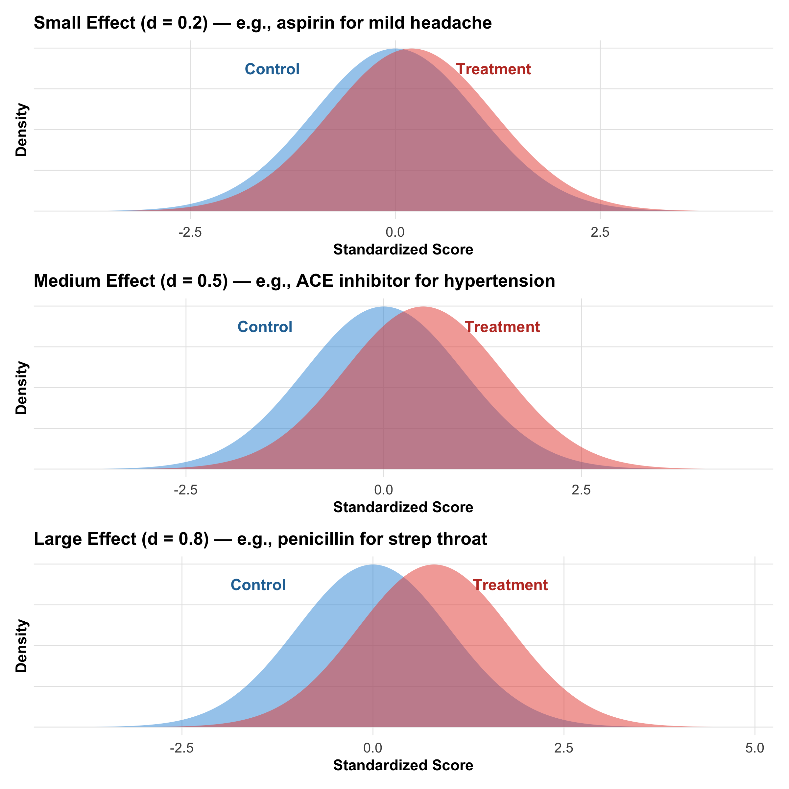
Figure 9.11: Three different effect sizes. Note how overlap between the distributions decreases as effect size increases. All three could have p < 0.05 with adequate sample size.
Cohen’s d: Formula and Interpretation
Tip
\[d = \frac{\bar{x}_1 - \bar{x}_2}{s_p}\]
where \(s_p = \sqrt{\frac{(n_1-1)s_1^2 + (n_2-1)s_2^2}{n_1 + n_2 - 2}}\) (pooled standard deviation)
Interpretation:
Cohen’s d
Effect Size
Clinical Example
0.0 – 0.2
Negligible
New antacid vs old antacid
0.2 – 0.5
Small
Aspirin on mild headache
0.5 – 0.8
Medium
Lisinopril on hypertension
0.8 – 1.2
Large
Penicillin on bacterial infection
> 1.2
Very large
Insulin in new-onset diabetes
Advantages over p-values:
Effect size is independent of sample size (p-value is not!)
Tells you magnitude of difference, not just presence/absence
Comparable across studies and outcomes
Required for meta-analysis (Module 13)
Worked Example: Effect Size vs P-Value
Clinical Scenario
Two groups of 50 hypertensive patients each receive either new ACE inhibitor or placebo. After 8 weeks:
Should we implement? ✅ YES — real finding with clinical utility
9.10 Section 8: The Multiple Testing Problem
The Core Problem
Code
num_tests<-seq(1, 50, by =1)prob_fp<-1-(1-0.05)^num_teststibble(`Number of Tests` =num_tests, `P(≥1 False Positive)` =prob_fp)%>%ggplot(aes(x =`Number of Tests`, y =`P(≥1 False Positive)`))+geom_line(linewidth =1.2, color ="#e74c3c")+geom_area(alpha =0.2, fill ="#e74c3c")+geom_vline(xintercept =20, linetype ="dashed", color ="darkred", alpha =0.7)+geom_hline(yintercept =0.05, linetype ="dashed", color ="blue", alpha =0.7)+scale_y_continuous(labels =percent_format(), limits =c(0, 1))+annotate("label", x =30, y =0.65, label ="At 20 tests:\nP(≥1 false positive) ≈ 64%", fontface ="bold", size =4, fill ="lightyellow")+annotate("text", x =5, y =0.08, label ="α = 0.05", color ="blue", fontface ="bold")+labs(title ="The Multiple Testing Problem", subtitle ="P(at least one false positive) = 1 − (1 − α)^k", x ="Number of Independent Tests (k)", y ="P(≥1 False Positive)")+theme_clean()
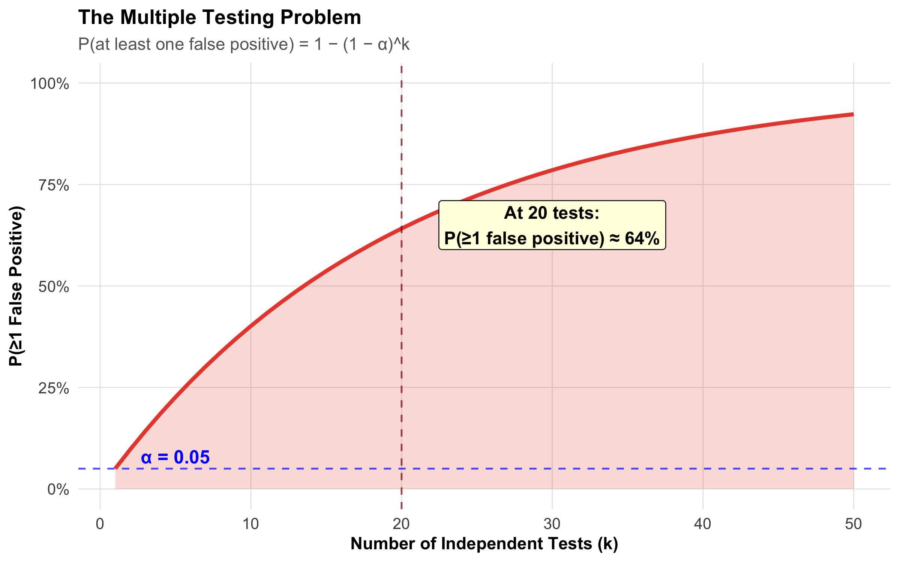
Figure 9.12: The probability of at least one false positive rises steeply as you conduct more tests. At 20 tests, there’s a 64% chance of at least one spurious ‘significant’ finding.
The Math: If you conduct k independent tests, each at α = 0.05:
Example: Testing 10 hypotheses → use α = 0.05/10 = 0.005 instead of 0.05. Only declare significance if p < 0.005.
Advantage: Controls the family-wise error rate (FWER) at α
Disadvantage: Very conservative — may miss real effects (increases β). For large k, consider Benjamini-Hochberg (False Discovery Rate) correction instead.
P-Hacking and Pre-Registration
P-Hacking (Researcher Degrees of Freedom)
P-hacking occurs when researchers manipulate analysis to achieve p < 0.05:
Test many variables/hypotheses post-hoc, report only significant ones
Try multiple statistical tests on the same data
Exclude outliers selectively to achieve p < 0.05
Stop data collection when p first crosses 0.05 (“peeking”)
Report only significant subgroups (file drawer bias)
Result: Inflated Type I error; many false positives in the literature
Solution: Pre-register your analysis plan before collecting data (ClinicalTrials.gov, OSF Registries). Indian journals like IJMR increasingly require this for clinical trials.
9.11 Section 9: Confidence Intervals and P-Values — Two Sides of the Same Coin
The Equivalence
The CI and p-value convey the same information about H₀, but in different forms:
If the 95% CI excludes the null value (e.g., zero for a difference, or 1 for a ratio) → p < 0.05
If the 95% CI includes the null value → p ≥ 0.05
But the CI gives you much more:
Code
studies<-tibble( Study =c("Study A: Large trial, clear effect","Study B: Moderate trial, clear effect","Study C: Small trial, significant","Study D: Small trial, NOT significant","Study E: Large trial, NOT significant"), Effect =c(5, 8, 12, 8, 1), CI_Lower =c(2, 5, 1, -3, -1), CI_Upper =c(8, 11, 23, 19, 3), Significant =c("Yes", "Yes", "Yes", "No", "No"))studies%>%mutate(Study =fct_inorder(Study)%>%fct_rev())%>%ggplot(aes(x =Study, y =Effect, color =Significant))+geom_hline(yintercept =0, linetype ="dashed", color ="red", linewidth =1)+geom_point(size =3)+geom_errorbar(aes(ymin =CI_Lower, ymax =CI_Upper), width =0.2, linewidth =1.2)+scale_color_manual( values =c("Yes"="#27ae60", "No"="#e74c3c"), labels =c("Yes"="CI excludes 0 (p < 0.05)", "No"="CI includes 0 (p ≥ 0.05)"), name =NULL)+coord_flip()+labs(title ="Confidence Intervals Tell You More Than P-Values", subtitle ="Dashed red line = null value (no effect)", x =NULL, y ="Effect Size (e.g., BP reduction in mmHg)")+theme_clean()+theme(legend.position ="top")
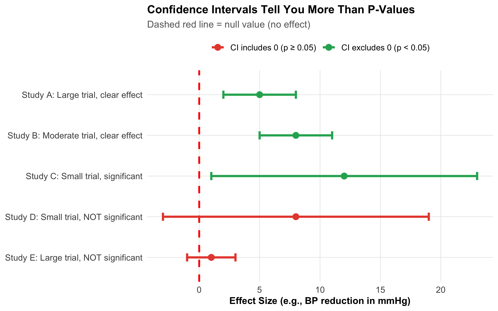
Figure 9.13: Confidence intervals tell you everything a p-value does — plus the magnitude and precision of the effect. Studies D and E both have p > 0.05, but D suggests a large effect with wide uncertainty (need more data) while E shows a precisely estimated null effect (truly no effect).
Tip
Aspect
P-Value
Confidence Interval
Shows effect size?
No
✅ YES
Shows precision/uncertainty?
Implicit only
✅ YES
Avoids dichotomous thinking?
No (significant/not significant)
✅ YES
Can assess clinical importance?
No
✅ YES (compare CI to MCID)
Subject to p-hacking?
Very much so
Less so
Intuitive to interpret?
No (commonly misunderstood)
More so
Best practice: Report both p-values AND confidence intervals. But if you could only have one, choose the CI.
Using CIs for Clinical Decision-Making
Example: Interpreting a CI Against the MCID
A trial reports: “New antihypertensive reduced SBP by 6 mmHg (95% CI: 3 to 9 mmHg, p = 0.001).”
MCID for BP = 5 mmHg
The point estimate (6 mmHg) exceeds the MCID ✅
The lower bound of the CI (3 mmHg) is below the MCID
Interpretation: The effect is likely clinically meaningful, but we cannot rule out that the true effect is below the MCID. The trial provides suggestive but not definitive evidence of clinical benefit.
Contrast with p-value alone: p = 0.001 would just say “significant!” — the CI tells you much more.
9.12 Section 10: Summary and Key Takeaways
The Big Picture: How Everything Connects
Code
# Create a visual summary using a flowchart-like plotflow_data<-tibble( step =c("Central Limit\nTheorem","Standard\nError","Confidence\nIntervals","Hypothesis\nTesting","P-Value","Type I/II\nErrors","Effect Size\n(Cohen's d)","Clinical vs\nStatistical\nSignificance"), x =c(1, 2, 3, 3, 4, 4, 5, 6), y =c(2, 2, 3, 1, 3, 1, 2, 2), color =c("#2c3e50", "#2980b9", "#27ae60", "#e74c3c", "#27ae60", "#e74c3c", "#8e44ad", "#f39c12"))arrows<-tibble( x =c(1, 2, 2, 3, 3, 4, 4, 5), xend =c(2, 3, 3, 4, 4, 5, 5, 6), y =c(2, 2, 2, 3, 1, 3, 1, 2), yend =c(2, 3, 1, 3, 1, 2, 2, 2))ggplot()+geom_segment(data =arrows, aes(x =x, xend =xend, y =y, yend =yend), arrow =arrow(length =unit(0.2, "cm"), type ="closed"), color ="gray60", linewidth =0.8)+geom_label(data =flow_data, aes(x =x, y =y, label =step, fill =color), color ="white", fontface ="bold", size =3.5, label.padding =unit(0.4, "lines"))+scale_fill_identity()+xlim(0.5, 6.5)+ylim(0, 4)+labs(title ="The Logical Flow of Statistical Inference", subtitle ="Each concept builds on the previous one")+theme_void()+theme(plot.title =element_text(face ="bold", size =14, hjust =0.5), plot.subtitle =element_text(size =11, color ="gray40", hjust =0.5))
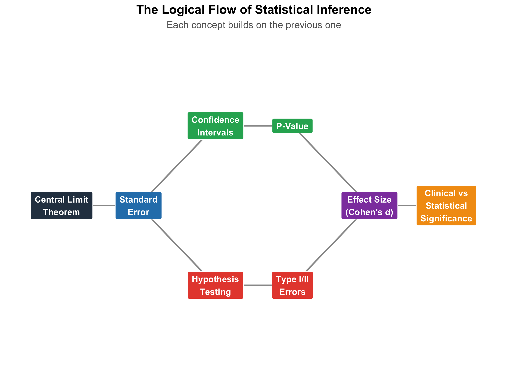
Figure 9.14: The logical flow of statistical inference: CLT enables → CIs and hypothesis tests → interpreted through effect size and clinical significance.
Critical Do’s and Don’ts
DO:
✅ Pre-specify your hypotheses and test direction
✅ Report confidence intervals alongside p-values
✅ Report effect sizes (Cohen’s d, OR, RR)
✅ Conduct power analysis BEFORE the study (Module 6)
✅ Correct for multiple comparisons if needed
✅ Report ALL tests conducted, not just significant ones
✅ Consider clinical vs statistical significance
✅ Replicate findings — one study is never enough
✅ Discuss limitations and alternative explanations
DON’T:
❌ Interpret p-value as probability H₀ is true
❌ Claim a non-significant result “proves” no effect
❌ Use one-tailed tests to dodge the 0.05 threshold
❌ Stop data collection when p < 0.05 (“peeking”)
❌ Test multiple hypotheses without correction
❌ Report “marginally significant” or “trend toward significance”
❌ Confuse statistical and clinical significance
❌ Rely solely on p-values without examining effect sizes
Bland M (2015).An Introduction to Medical Statistics (4th ed). Oxford University Press. Chapters 8–10: Estimation, Hypothesis Testing, Power and Sample Sizes.
Goodman S (2008). A Dirty Dozen: Twelve P-Value Misconceptions. Seminars in Hematology, 45(3), 135–140.
9.14 Practice Questions: NEET PG Style MCQs
Q1: Central Limit Theorem
A researcher measures serum creatinine in 100 chronic kidney disease patients. The individual values are heavily right-skewed. The researcher wants to estimate the population mean. Which statement is CORRECT?
Code
make_mcq( id ="m8q1", question ="A researcher measures serum creatinine in 100 CKD patients. The values are heavily right-skewed. Which statement is CORRECT?", options =c("The sample mean will be unreliable because the data are not normally distributed"="Wrong — the sample mean can still be reliable; the CLT ensures the sampling distribution of the mean becomes normal even if individual values are skewed.","answer:The sampling distribution of the mean will be approximately normal due to the Central Limit Theorem"="Correct! The CLT states that the distribution of sample means approaches normality regardless of the population shape, provided n is large enough. With n = 100, this applies even to heavily skewed data.","A minimum of 500 patients is needed for the CLT to apply to skewed data"="Wrong — n = 30 is the common rule of thumb; n = 100 is more than adequate even for heavily skewed distributions.","The CLT only applies when the population itself is normally distributed"="Wrong — this is the exact opposite of the CLT. The CLT works for any population shape; that is its power."))
✘ A. The sample mean will be unreliable because the data are not normally distributed — Wrong — the sample mean can still be reliable; the CLT ensures the sampling distribution of the mean becomes normal even if individual values are skewed.
✔ B. The sampling distribution of the mean will be approximately normal due to the Central Limit Theorem — Correct! The CLT states that the distribution of sample means approaches normality regardless of the population shape, provided n is large enough. With n = 100, this applies even to heavily skewed data.
✘ C. A minimum of 500 patients is needed for the CLT to apply to skewed data — Wrong — n = 30 is the common rule of thumb; n = 100 is more than adequate even for heavily skewed distributions.
✘ D. The CLT only applies when the population itself is normally distributed — Wrong — this is the exact opposite of the CLT. The CLT works for any population shape; that is its power.
Q2: Confidence Interval Interpretation
A study of 200 diabetic patients reports: “Mean fasting blood sugar = 142 mg/dL (95% CI: 136 to 148 mg/dL).” Which interpretation is CORRECT?
Code
make_mcq( id ="m8q2", question ="Mean FBS = 142 mg/dL (95% CI: 136 to 148). Which interpretation is CORRECT?", options =c("95% of the patients in the study have FBS between 136 and 148 mg/dL"="Wrong — the CI is about the population mean, not individual patient values. Individual values spread much wider.","There is a 95% probability that the true population mean FBS is between 136 and 148 mg/dL"="Wrong — the true mean is a fixed number; it either is or isn't in the interval. The 95% refers to the procedure, not the parameter.","answer:If the study were repeated many times, 95% of the calculated CIs would contain the true population mean"="Correct! This is the precise frequentist interpretation. The 95% refers to the method — if repeated many times, 95% of intervals would capture the true parameter.","The next patient sampled will have FBS between 136 and 148 mg/dL with 95% probability"="Wrong — predicting individual values requires a prediction interval, which is much wider than a CI."))
✘ A. 95% of the patients in the study have FBS between 136 and 148 mg/dL — Wrong — the CI is about the population mean, not individual patient values. Individual values spread much wider.
✘ B. There is a 95% probability that the true population mean FBS is between 136 and 148 mg/dL — Wrong — the true mean is a fixed number; it either is or isn’t in the interval. The 95% refers to the procedure, not the parameter.
✔ C. If the study were repeated many times, 95% of the calculated CIs would contain the true population mean — Correct! This is the precise frequentist interpretation. The 95% refers to the method — if repeated many times, 95% of intervals would capture the true parameter.
✘ D. The next patient sampled will have FBS between 136 and 148 mg/dL with 95% probability — Wrong — predicting individual values requires a prediction interval, which is much wider than a CI.
Q3: P-Value Interpretation
A clinical trial comparing a new antidiabetic agent to metformin reports p = 0.03 for the primary outcome (HbA1c reduction). Which statement is the CORRECT interpretation?
Code
make_mcq( id ="m8q3", question ="A trial reports p = 0.03 for HbA1c reduction (new drug vs metformin). Which is CORRECT?", options =c("There is a 97% probability that the new drug is truly better than metformin"="Wrong — backwards! The p-value doesn't tell us P(H₀ is false). It's about the data given H₀, not H₀ given the data.","answer:If metformin and the new drug are equally effective, there is a 3% chance of observing data this extreme due to random variation"="Correct! This is the precise definition of a p-value — the probability of results as extreme or more extreme than observed, assuming H₀ is true.","The new drug is 97% likely to reduce HbA1c in the entire population"="Wrong — confuses sample finding with population certainty. The p-value says nothing about the probability the result is 'true.'","The null hypothesis is false with 97% certainty"="Wrong — p-value is NOT a probability that H₀ is true or false. It is conditional on H₀ being true."))
✘ A. There is a 97% probability that the new drug is truly better than metformin — Wrong — backwards! The p-value doesn’t tell us P(H₀ is false). It’s about the data given H₀, not H₀ given the data.
✔ B. If metformin and the new drug are equally effective, there is a 3% chance of observing data this extreme due to random variation — Correct! This is the precise definition of a p-value — the probability of results as extreme or more extreme than observed, assuming H₀ is true.
✘ C. The new drug is 97% likely to reduce HbA1c in the entire population — Wrong — confuses sample finding with population certainty. The p-value says nothing about the probability the result is ‘true.’
✘ D. The null hypothesis is false with 97% certainty — Wrong — p-value is NOT a probability that H₀ is true or false. It is conditional on H₀ being true.
Q4: Type I vs Type II Error
A researcher conducts a trial testing a new TB drug. With 60 patients per group, the trial reports p = 0.12 and concludes “the new drug is not effective.” However, the effect size was d = 0.4 (small-to-medium). Which is the most likely explanation?
Code
make_mcq( id ="m8q4", question ="A TB drug trial (n=60/group) reports p=0.12 but effect size d=0.4. Most likely explanation?", options =c("Type I error — the drug works but the test gave a false alarm"="Wrong — Type I error means concluding an effect when there is none. Here they concluded no effect.","The drug truly has no effect, as confirmed by the non-significant p-value"="Wrong — absence of evidence is not evidence of absence. The p-value reflects low power, not proof of no effect.","answer:Type II error — the study was underpowered to detect a small-to-medium effect with only 60 per group"="Correct! With n=60/group and d=0.4, the study has only ~50% power. A 50% chance of missing a real effect makes Type II error very likely.","The effect size is too small to be real"="Wrong — d=0.4 is a real and potentially meaningful effect. The sample size is inadequate, not the effect."))
✘ A. Type I error — the drug works but the test gave a false alarm — Wrong — Type I error means concluding an effect when there is none. Here they concluded no effect.
✘ B. The drug truly has no effect, as confirmed by the non-significant p-value — Wrong — absence of evidence is not evidence of absence. The p-value reflects low power, not proof of no effect.
✔ C. Type II error — the study was underpowered to detect a small-to-medium effect with only 60 per group — Correct! With n=60/group and d=0.4, the study has only ~50% power. A 50% chance of missing a real effect makes Type II error very likely.
✘ D. The effect size is too small to be real — Wrong — d=0.4 is a real and potentially meaningful effect. The sample size is inadequate, not the effect.
Q5: Multiple Testing
A researcher analyzes 30 different blood pressure subgroups (age, sex, BMI categories, etc.) looking for which subgroups benefit most from a new antihypertensive. They report 3 subgroups with p < 0.05. What is the most appropriate interpretation?
Code
make_mcq( id ="m8q5", question ="30 BP subgroups tested, 3 have p < 0.05. Most appropriate interpretation?", options =c("The three subgroups truly respond differently, confirming personalized medicine"="Wrong — post-hoc subgroup findings are exploratory, not confirmatory. They cannot confirm anything without replication.","answer:With 30 tests at α = 0.05, we expect ~1.5 false positives by chance; the 'significant' findings may be spurious and need replication"="Correct! Expected false positives = 30 × 0.05 = 1.5. Finding 3 is consistent with chance. Apply Bonferroni (α = 0.0017) and replicate.","The Bonferroni-corrected threshold is 0.05/3 = 0.017"="Wrong — Bonferroni correction = 0.05/30 = 0.0017. You correct for ALL tests performed, not just the significant ones.","Subgroup analyses are always valid if the overall trial was well-designed"="Wrong — subgroup analyses inflate Type I error even in well-designed trials unless pre-specified and corrected for."))
✘ A. The three subgroups truly respond differently, confirming personalized medicine — Wrong — post-hoc subgroup findings are exploratory, not confirmatory. They cannot confirm anything without replication.
✔ B. With 30 tests at α = 0.05, we expect ~1.5 false positives by chance; the ‘significant’ findings may be spurious and need replication — Correct! Expected false positives = 30 × 0.05 = 1.5. Finding 3 is consistent with chance. Apply Bonferroni (α = 0.0017) and replicate.
✘ C. The Bonferroni-corrected threshold is 0.05/3 = 0.017 — Wrong — Bonferroni correction = 0.05/30 = 0.0017. You correct for ALL tests performed, not just the significant ones.
✘ D. Subgroup analyses are always valid if the overall trial was well-designed — Wrong — subgroup analyses inflate Type I error even in well-designed trials unless pre-specified and corrected for.
Q6: Confidence Interval and Hypothesis Testing
A trial reports: “New analgesic reduced pain score by 12 points (95% CI: −2 to 26 points, p = 0.09).” The MCID for pain is 10 points. What is the best interpretation?
Code
make_mcq( id ="m8q6", question ="Pain reduced by 12 points (95% CI: −2 to 26, p=0.09). MCID = 10 points. Best interpretation?", options =c("The analgesic is ineffective and should not be used"="Wrong — absence of significance ≠ evidence of absence. The point estimate (12) exceeds the MCID; the study is simply underpowered.","The analgesic is effective because the point estimate (12) exceeds the MCID (10)"="Wrong — the CI is too wide to be confident. The true effect could be anywhere from −2 to 26 points.","answer:The result is inconclusive — the CI includes both clinically important effects and no effect; a larger trial is needed"="Correct! The CI spans zero (no effect) to 26 (large effect). The wide CI reflects imprecision from small sample size. A larger trial is the appropriate next step.","The CI includes negative values, proving the drug may cause harm"="Wrong — a CI crossing zero slightly doesn't 'prove' harm. It reflects uncertainty, not evidence of a harmful effect."))
✘ A. The analgesic is ineffective and should not be used — Wrong — absence of significance ≠ evidence of absence. The point estimate (12) exceeds the MCID; the study is simply underpowered.
✘ B. The analgesic is effective because the point estimate (12) exceeds the MCID (10) — Wrong — the CI is too wide to be confident. The true effect could be anywhere from −2 to 26 points.
✔ C. The result is inconclusive — the CI includes both clinically important effects and no effect; a larger trial is needed — Correct! The CI spans zero (no effect) to 26 (large effect). The wide CI reflects imprecision from small sample size. A larger trial is the appropriate next step.
✘ D. The CI includes negative values, proving the drug may cause harm — Wrong — a CI crossing zero slightly doesn’t ‘prove’ harm. It reflects uncertainty, not evidence of a harmful effect.
9.15 References
Altman DG. (1991). Practical Statistics for Medical Research. Chapman & Hall.
Bland M. (2015). An Introduction to Medical Statistics (4th ed). Oxford University Press.
Cohen J. (1988). Statistical Power Analysis for the Behavioral Sciences (2nd ed). Lawrence Erlbaum Associates.
Goodman S. (2008). A Dirty Dozen: Twelve P-Value Misconceptions. Seminars in Hematology, 45(3), 135–140.
Wasserstein RL, Lazar NA. (2016). The ASA’s Statement on P-Values: Context, Process, and Purpose. The American Statistician, 70(2), 129–133.
Last Updated: 2026-02-25 Module Authors: Dr. Abhijit Pakhare & Dr. Ankur Joshi, AIIMS Bhopal
Source Code
---title: "Statistical Inference — Confidence Intervals and Hypothesis Testing"subtitle: "From Sample to Population: The Central Limit Theorem, Estimation, p-values, and Why 'Significant' Doesn't Always Mean 'Important'"description: "A comprehensive module covering the Central Limit Theorem as the foundation of inference, confidence intervals as measures of precision, and hypothesis testing as a decision framework. Understand how CIs and p-values are two sides of the same coin, and why effect size matters more than statistical significance."categories: - Biostatistics - Central Limit Theorem - Confidence Intervals - Hypothesis Testing - Statistical Inference - P-values - Effect Sizeauthor: "AIIMS Bhopal Biostatistics Course"date: "`r Sys.Date()`"---```{r}#| label: setup#| include: falselibrary(tidyverse)library(kableExtra)source("../R/mcq.R")library(patchwork)library(scales)set.seed(42)theme_clean <-function() {theme_minimal(base_size =12) +theme(plot.title =element_text(face ="bold", size =13),plot.subtitle =element_text(size =11, color ="gray40"),panel.grid.minor =element_blank(),panel.grid.major =element_line(color ="gray90", linewidth =0.3),axis.text =element_text(size =10),axis.title =element_text(size =11, face ="bold"),legend.position ="bottom",legend.title =element_text(face ="bold") )}```::: {.callout-note appearance="minimal"}**Lecture slides for this module:** [Open Slides](../slides/08-statistical-inference-slides.html){target="_blank"}:::## Learning Objectives {#learning-objectives}By the end of this module, you will be able to:1. **Explain** the Central Limit Theorem and why it is the foundation of all statistical inference2. **Calculate and interpret** confidence intervals for means and proportions3. **Identify** factors that affect confidence interval width and their clinical implications4. **Explain** the logical foundation of hypothesis testing using proof by contradiction5. **Define and distinguish** between null (H₀) and alternative (H₁) hypotheses6. **Interpret** p-values correctly and recognize common misconceptions7. **Calculate and compare** Type I error (α), Type II error (β), and statistical power (1-β)8. **Distinguish** between statistical significance and clinical significance9. **Compute** effect sizes (Cohen's d) and relate them to clinical minimal important differences10. **Identify** multiple testing problems and apply appropriate corrections11. **Use** confidence intervals as an alternative to p-values for inference---## Clinical Hook {.clinical-hook}In 2022, a pharmaceutical company announced Phase III trial results for their new antihypertensive agent in The Lancet. With 10,000 patients enrolled across 15 Indian centres, they reported that their drug reduced systolic BP by 2 mmHg more than standard therapy (p = 0.03).The headlines in Indian medical media screamed: **"Breakthrough antihypertensive shows significant blood pressure reduction!"** Several prestigious hospitals began incorporating this drug into their protocols.But here's the clinical reality: A 2 mmHg difference is **clinically irrelevant**. The most rigorous meta-analyses suggest the minimal clinically important difference (MCID) for BP reduction is 5–10 mmHg. This drug offers no real therapeutic advantage, yet it was marketed as a "significant" breakthrough.**What happened?** With such a massive sample size (n = 10,000), even trivial differences achieve statistical significance. The distinction between *statistical significance* (p < 0.05) and *clinical significance* (difference large enough to matter to patients) is one of the **most misunderstood concepts in medicine** — and one of the most tested in NEET PG and board exams.This module builds from the ground up: starting with *why* inference works at all (the Central Limit Theorem), moving through *how* we quantify uncertainty (confidence intervals), and finally *how* we make decisions (hypothesis testing) — and the traps that await the unwary clinician.---## Section 1: The Central Limit Theorem — Why Inference Works### The Fundamental ProblemIn Module 6, you learned how to draw samples from populations. But here's the deep question: **why should a sample tell us anything about the population?**If you measure haemoglobin in 50 patients from a district hospital, you get a sample mean (say, 11.8 g/dL). But this is just *one* sample. A different set of 50 patients would give a slightly different mean (maybe 12.1, or 11.5). So how can we make confident statements about the *population* mean from just one sample?The answer is the **Central Limit Theorem (CLT)** — arguably the single most important result in all of statistics.### Statement of the CLT::::{.callout-tip}If you draw repeated random samples of size **n** from *any* population with mean **μ** and standard deviation **σ**, then as **n** increases, the **distribution of sample means** ($\bar{x}$) approaches a **normal distribution** with:$$\text{Mean of } \bar{x} = \mu \quad \text{(same as population mean)}$$$$\text{Standard deviation of } \bar{x} = \frac{\sigma}{\sqrt{n}} \quad \text{(called the Standard Error)}$$This holds **regardless of the shape of the original population distribution** — even if the population is heavily skewed.::::The key insight: even if individual patient values follow a bizarre, skewed distribution, the *average* of a sample of those values will be approximately normally distributed. This is what makes CIs and hypothesis tests possible.### CLT in Action: Simulation with Skewed Clinical Data```{r}#| label: fig-clt-simulation#| fig-cap: "Central Limit Theorem demonstrated with right-skewed hospital length-of-stay data. Even though individual stays are heavily skewed (top-left), the distribution of sample means becomes progressively normal as sample size increases."#| fig-height: 8# Simulate a right-skewed population (hospital length of stay in days)set.seed(42)population <-rgamma(100000, shape =2, rate =0.5) # Right-skewedpop_mean <-mean(population)pop_sd <-sd(population)# Function to draw sample meansdraw_means <-function(n, n_samples =5000) {replicate(n_samples, mean(sample(population, n)))}# Draw sampling distributions for different nmeans_n5 <-draw_means(5)means_n30 <-draw_means(30)means_n100 <-draw_means(100)# Create plotsp_pop <-ggplot(tibble(x = population[1:5000]), aes(x = x)) +geom_histogram(aes(y =after_stat(density)), bins =50,fill ="#e74c3c", alpha =0.7, color ="white") +geom_vline(xintercept = pop_mean, linetype ="dashed", linewidth =1, color ="#2c3e50") +labs(title ="Original Population (Length of Stay, days)",subtitle =paste0("Heavily right-skewed | μ = ", round(pop_mean, 1),", σ = ", round(pop_sd, 1)),x ="Days", y ="Density") +theme_clean()p_n5 <-ggplot(tibble(x = means_n5), aes(x = x)) +geom_histogram(aes(y =after_stat(density)), bins =50,fill ="#3498db", alpha =0.7, color ="white") +stat_function(fun = dnorm,args =list(mean = pop_mean, sd = pop_sd /sqrt(5)),linewidth =1, color ="#2c3e50", linetype ="dashed") +geom_vline(xintercept = pop_mean, linetype ="dashed", linewidth =0.8, color ="#c0392b") +labs(title ="Sampling Distribution: n = 5",subtitle =paste0("Still skewed | SE = ", round(pop_sd /sqrt(5), 2)),x ="Sample Mean (days)", y ="Density") +theme_clean()p_n30 <-ggplot(tibble(x = means_n30), aes(x = x)) +geom_histogram(aes(y =after_stat(density)), bins =50,fill ="#27ae60", alpha =0.7, color ="white") +stat_function(fun = dnorm,args =list(mean = pop_mean, sd = pop_sd /sqrt(30)),linewidth =1, color ="#2c3e50", linetype ="dashed") +geom_vline(xintercept = pop_mean, linetype ="dashed", linewidth =0.8, color ="#c0392b") +labs(title ="Sampling Distribution: n = 30",subtitle =paste0("Approximately normal | SE = ", round(pop_sd /sqrt(30), 2)),x ="Sample Mean (days)", y ="Density") +theme_clean()p_n100 <-ggplot(tibble(x = means_n100), aes(x = x)) +geom_histogram(aes(y =after_stat(density)), bins =50,fill ="#8e44ad", alpha =0.7, color ="white") +stat_function(fun = dnorm,args =list(mean = pop_mean, sd = pop_sd /sqrt(100)),linewidth =1, color ="#2c3e50", linetype ="dashed") +geom_vline(xintercept = pop_mean, linetype ="dashed", linewidth =0.8, color ="#c0392b") +labs(title ="Sampling Distribution: n = 100",subtitle =paste0("Clearly normal | SE = ", round(pop_sd /sqrt(100), 2)),x ="Sample Mean (days)", y ="Density") +theme_clean()(p_pop + p_n5) / (p_n30 + p_n100)```### Three Key Takeaways from the CLT::::{.callout-important title="Why the CLT Matters for Every Clinician"}**1. Normality is about the *sampling distribution*, not the data.**Your patient data can be wildly skewed — hospital costs, length of stay, viral loads — but the *mean* of a large enough sample will still follow a normal distribution.**2. The Standard Error shrinks with √n.**$$SE = \frac{\sigma}{\sqrt{n}}$$Double the sample size → SE reduces by factor of √2 ≈ 1.41 (not by half!). To halve the SE, you need 4× the sample size. This is the **√n law** you encountered in Module 6.**3. "Large enough" is context-dependent.**The common rule of thumb is n ≥ 30, but this depends on how skewed the population is. For symmetric data, n = 10 may suffice. For extremely skewed data (like healthcare costs), n = 100+ may be needed.::::### The Standard Error: Connecting CLT to InferenceThe **standard error (SE)** is the bridge between the CLT and everything that follows in this module:- **Confidence intervals** are built as: estimate ± (critical value × SE)- **Test statistics** are computed as: (observed - expected) / SE- **Sample size formulas** (Module 6) manipulate SE to achieve desired precision```{r}#| label: fig-se-shrinks#| fig-cap: "Standard Error decreases with sample size following the √n law. Doubling precision requires quadrupling the sample size."n_vals <-seq(5, 500, by =5)se_vals <- pop_sd /sqrt(n_vals)tibble(n = n_vals, SE = se_vals) %>%ggplot(aes(x = n, y = SE)) +geom_line(linewidth =1.2, color ="#2980b9") +geom_point(data =tibble(n =c(10, 30, 100, 200, 400),SE = pop_sd /sqrt(c(10, 30, 100, 200, 400)),label =paste0("n=", c(10, 30, 100, 200, 400), "\nSE=", round(pop_sd /sqrt(c(10, 30, 100, 200, 400)), 2)) ), aes(x = n, y = SE), size =3, color ="#c0392b") +geom_text(data =tibble(n =c(10, 30, 100, 200, 400),SE = pop_sd /sqrt(c(10, 30, 100, 200, 400)),label =paste0("n=", c(10, 30, 100, 200, 400), "\nSE=", round(pop_sd /sqrt(c(10, 30, 100, 200, 400)), 2)) ), aes(label = label), vjust =-0.8, size =3.5, color ="#2c3e50") +labs(title ="The √n Law: How SE Decreases with Sample Size",subtitle ="Diminishing returns — each additional subject contributes less to precision",x ="Sample Size (n)",y ="Standard Error (SE)") +theme_clean()```---## Section 2: Confidence Intervals — Quantifying Uncertainty### From Point Estimate to Interval EstimateWhen you measure mean haemoglobin in a sample of 50 anaemic patients and get $\bar{x}$ = 9.2 g/dL, that single number is a **point estimate**. But how precise is it? Is the true population mean likely 9.0 or 9.5 or even 8.5?A **confidence interval** answers this by providing a *range* of plausible values for the population parameter, along with a stated level of confidence.::::{.callout-tip}$$\text{CI} = \text{Point Estimate} \pm (\text{Critical Value}) \times \text{Standard Error}$$**For a population mean (σ unknown, which is almost always):**$$\bar{x} \pm t_{\alpha/2, \, df} \times \frac{s}{\sqrt{n}}$$**For a population proportion:**$$\hat{p} \pm z_{\alpha/2} \times \sqrt{\frac{\hat{p}(1-\hat{p})}{n}}$$where:- $\bar{x}$ = sample mean, $\hat{p}$ = sample proportion- $s$ = sample standard deviation- $n$ = sample size- $t_{\alpha/2}$ or $z_{\alpha/2}$ = critical value from t or z distribution- For 95% CI: $z_{0.025}$ = 1.96; $t_{0.025}$ depends on degrees of freedom (df = n − 1)::::### Worked Example: CI for a Mean::::{.callout-note title="Example: Mean Fasting Blood Sugar in Type 2 Diabetes Patients"}A study of 64 newly diagnosed Type 2 diabetes patients at a PHC in Madhya Pradesh found:- Sample mean FBS: $\bar{x}$ = 156 mg/dL- Sample SD: $s$ = 32 mg/dL- Sample size: $n$ = 64**Calculate the 95% CI for the population mean FBS.****Step 1:** Calculate SE = $s / \sqrt{n}$ = 32 / √64 = 32 / 8 = **4 mg/dL****Step 2:** Find critical value. With n = 64, df = 63. For 95% CI, $t_{0.025, 63}$ ≈ 2.00 (close to 1.96 for large n)**Step 3:** CI = 156 ± 2.00 × 4 = 156 ± 8 = **(148, 164) mg/dL****Interpretation:** We are 95% confident that the true mean FBS for this population of newly diagnosed diabetics lies between 148 and 164 mg/dL.::::### Worked Example: CI for a Proportion::::{.callout-note title="Example: Prevalence of Hypertension in Rural Bhopal"}A cross-sectional survey of 400 adults in rural Bhopal found 72 had hypertension (BP ≥ 140/90).- Sample proportion: $\hat{p}$ = 72/400 = 0.18 (18%)- $n$ = 400**Calculate the 95% CI for the true prevalence.****Step 1:** SE = $\sqrt{\hat{p}(1-\hat{p})/n}$ = $\sqrt{0.18 \times 0.82 / 400}$ = $\sqrt{0.000369}$ = **0.0192****Step 2:** CI = 0.18 ± 1.96 × 0.0192 = 0.18 ± 0.038 = **(0.142, 0.218)****Interpretation:** We are 95% confident that the true prevalence of hypertension in this rural population is between **14.2% and 21.8%**.**Check:** np = 400 × 0.18 = 72 ≥ 5 and n(1−p) = 400 × 0.82 = 328 ≥ 5, so normal approximation is valid.::::### Correct Interpretation of Confidence IntervalsThis is where students and even researchers get confused. Let's be very precise:```{r}#| label: fig-ci-simulation#| fig-cap: "100 simulated 95% CIs from the same population (μ = 120 mmHg). About 95 capture the true mean (blue), while ~5 miss it (red). Each individual CI either contains μ or it doesn't — there's no probability about it."#| fig-height: 8# Simulate 100 CIs from a population with known meantrue_mean <-120true_sd <-15n_sim <-40n_cis <-100set.seed(123)ci_data <-tibble(study =1:n_cis,sample_mean =replicate(n_cis, mean(rnorm(n_sim, true_mean, true_sd))),sample_se =replicate(n_cis, sd(rnorm(n_sim, true_mean, true_sd)) /sqrt(n_sim))) %>%mutate(ci_lower = sample_mean -qt(0.975, n_sim -1) * sample_se,ci_upper = sample_mean +qt(0.975, n_sim -1) * sample_se,captures_mean = ci_lower <= true_mean & ci_upper >= true_mean )n_captured <-sum(ci_data$captures_mean)ggplot(ci_data, aes(x = study, y = sample_mean, color = captures_mean)) +geom_hline(yintercept = true_mean, linewidth =1.2, color ="#2c3e50", linetype ="solid") +geom_point(size =1.5) +geom_errorbar(aes(ymin = ci_lower, ymax = ci_upper), width =0, linewidth =0.5) +scale_color_manual(values =c("TRUE"="#3498db", "FALSE"="#e74c3c"),labels =c("TRUE"="Captures μ", "FALSE"="Misses μ"),name =NULL ) +annotate("text", x =50, y = true_mean +8,label =paste0("True μ = ", true_mean, " mmHg"),fontface ="bold", size =4, color ="#2c3e50") +annotate("text", x =85, y = true_mean -9,label =paste0(n_captured, " out of 100 CIs\ncapture the true mean"),fontface ="bold", size =4, color ="#3498db") +coord_flip() +labs(title ="What Does '95% Confidence' Actually Mean?",subtitle ="Each horizontal line is one 95% CI from a different random sample (n = 40)",x ="Study Number",y ="Systolic Blood Pressure (mmHg)") +theme_clean() +theme(legend.position ="top")```::::{.callout-warning}**❌ Wrong:** "There is a 95% probability that the true mean is between 148 and 164 mg/dL."**Why wrong:** The true mean is a fixed (unknown) number — it either is or isn't in the interval. There's no randomness about the parameter; the randomness is in the *sampling process*.**❌ Wrong:** "95% of all patient values fall between 148 and 164 mg/dL."**Why wrong:** The CI is about the *population mean*, not about individual values. Individual patient values spread much wider (use prediction intervals for that).**❌ Wrong:** "If I repeat the study, there's a 95% chance the new sample mean falls in this interval."**Why wrong:** A new sample mean would generate its own CI. The 95% refers to the *method* — if you repeated the whole process 100 times, ~95 of those CIs would capture the true mean.**✅ Correct:** "If we were to repeat this study many times, 95% of the calculated intervals would contain the true population mean."Or more practically: "We are 95% confident in the procedure that generated this interval."::::### Factors Affecting CI Width```{r}#| label: fig-ci-width-factors#| fig-cap: "Three factors that determine CI width: sample size, variability, and confidence level. Narrower CIs indicate more precise estimates."#| fig-height: 8# Factor 1: Sample sizen_range <-c(10, 25, 50, 100, 200, 500)ci_by_n <-tibble(n = n_range,width =2*qt(0.975, n_range -1) * (32/sqrt(n_range)),factor ="Sample Size")p_n <-ggplot(ci_by_n, aes(x =factor(n), y = width)) +geom_col(fill ="#3498db", alpha =0.7, width =0.6) +geom_text(aes(label =round(width, 1)), vjust =-0.5, size =3.5, fontface ="bold") +labs(title ="Effect of Sample Size on CI Width",subtitle ="SD = 32, 95% confidence | Larger n → narrower CI",x ="Sample Size (n)", y ="CI Width (mg/dL)") +theme_clean()# Factor 2: Variability (SD)sd_range <-c(10, 20, 30, 40, 50)ci_by_sd <-tibble(sd = sd_range,width =2*qt(0.975, 63) * (sd_range /sqrt(64)),factor ="Variability")p_sd <-ggplot(ci_by_sd, aes(x =factor(sd), y = width)) +geom_col(fill ="#e74c3c", alpha =0.7, width =0.6) +geom_text(aes(label =round(width, 1)), vjust =-0.5, size =3.5, fontface ="bold") +labs(title ="Effect of Variability (SD) on CI Width",subtitle ="n = 64, 95% confidence | More variable data → wider CI",x ="Standard Deviation", y ="CI Width (mg/dL)") +theme_clean()# Factor 3: Confidence levelconf_levels <-c(0.80, 0.90, 0.95, 0.99)z_vals <-qnorm(1- (1- conf_levels) /2)ci_by_conf <-tibble(conf =paste0(conf_levels *100, "%"),width =2* z_vals * (32/sqrt(64)),factor ="Confidence Level")p_conf <-ggplot(ci_by_conf, aes(x = conf, y = width)) +geom_col(fill ="#27ae60", alpha =0.7, width =0.6) +geom_text(aes(label =round(width, 1)), vjust =-0.5, size =3.5, fontface ="bold") +labs(title ="Effect of Confidence Level on CI Width",subtitle ="n = 64, SD = 32 | Higher confidence → wider CI (trade-off!)",x ="Confidence Level", y ="CI Width (mg/dL)") +theme_clean()p_n / p_sd / p_conf```::::{.callout-tip title="What Makes a CI Narrower?"}| Factor | To narrow the CI... | Trade-off ||--------|-------------------|-----------|| Sample size (n) | Increase n | Costs more money and time || Variability (σ) | Reduce σ (better measurements, homogeneous groups) | May limit generalizability || Confidence level | Lower confidence (e.g., 90% instead of 95%) | Less confident in your estimate |**The only free lunch is reducing measurement error.** The other two involve real trade-offs. This is why sample size planning (Module 6) is so important — you choose n to achieve the CI width you need.::::---## Section 3: The Logic of Hypothesis Testing### Proof by Contradiction (Reductio ad Absurdum)Hypothesis testing is fundamentally a **logical proof by contradiction**. You've encountered this in mathematics:*To prove a statement is true, assume it's false and show this leads to absurdity.***Example (Mathematical):**To prove √2 is irrational, assume it's rational (= p/q), derive p² = 2q², then show this is impossible.**Example (Statistical):**To test whether a new antiarrhythmic drug works, we assume it *doesn't* (null hypothesis) and ask: "How unlikely is our observed data if this assumption were true?" If our data seem very unlikely under this assumption, we reject the assumption and conclude the drug probably works.### The Two-Hypothesis Framework```{r}#| label: fig-h0-h1#| fig-cap: "The two overlapping sampling distributions under H₀ (no effect) and H₁ (real effect). The critical value divides the decision space into 'reject' and 'fail to reject' regions."x <-seq(-4, 5, length.out =1000)h0 <-dnorm(x, mean =0, sd =1)h1 <-dnorm(x, mean =2, sd =1)critical_z <-qnorm(0.95)df_main <-tibble(x = x, h0 = h0, h1 = h1)df_type1 <- df_main %>%filter(x >= critical_z)df_type2 <- df_main %>%filter(x < critical_z)ggplot(df_main, aes(x = x)) +geom_area(aes(y = h0, fill ="H₀ (Drug has no effect)"), alpha =0.5) +geom_area(aes(y = h1, fill ="H₁ (Drug has effect)"), alpha =0.5) +geom_vline(xintercept = critical_z, linetype ="dashed", color ="red", linewidth =1) +geom_area(data = df_type1, aes(x = x, y = h0, fill ="Type I Error (α)"), alpha =0.8) +geom_area(data = df_type2, aes(x = x, y = h1, fill ="Type II Error (β)"), alpha =0.8) +scale_fill_manual(values =c("H₀ (Drug has no effect)"="#3498db","H₁ (Drug has effect)"="#e74c3c","Type I Error (α)"="#c0392b","Type II Error (β)"="#f39c12" )) +labs(title ="Hypothesis Testing: Two Overlapping Distributions",subtitle ="α = 0.05, one-tailed test | The overlap creates the possibility of errors",x ="Test Statistic (z)", y ="Probability Density", fill =NULL) +annotate("text", x = critical_z +0.5, y =0.35,label ="Reject H₀\n(α = 0.05)", size =4, color ="darkred", fontface ="bold") +annotate("text", x =-2, y =0.35,label ="Fail to Reject H₀", size =4, color ="darkgreen", fontface ="bold") +theme_clean() +theme(legend.position ="bottom", legend.text =element_text(size =9))```**Key Definitions:**- **H₀ (Null Hypothesis):** The claim of "no effect" or "no difference." Examples: New drug = standard drug; μ = 120 mmHg; Treatment effect = 0- **H₁ (Alternative Hypothesis):** The claim we want to support — that something *is* different. Examples: New drug ≠ standard drug (two-tailed); New drug > standard drug (one-tailed)**Crucial Point:** We never "prove" H₁; we only decide whether H₀ is plausible.### One-Tailed vs Two-Tailed Tests```{r}#| label: fig-one-vs-two-tailed#| fig-cap: "Two-tailed test splits α across both tails (more conservative); one-tailed test puts all α in one tail (more power but riskier)."x <-seq(-4, 4, length.out =1000)y <-dnorm(x)df_tail <-tibble(x = x, y = y)p_two <-ggplot(df_tail, aes(x = x, y = y)) +geom_area(fill ="lightblue", alpha =0.7) +geom_area(data = df_tail %>%filter(x >1.96), fill ="red", alpha =0.8) +geom_area(data = df_tail %>%filter(x <-1.96), fill ="red", alpha =0.8) +geom_vline(xintercept =c(-1.96, 1.96), linetype ="dashed", color ="darkred") +labs(title ="Two-Tailed Test (α = 0.05)",subtitle ="0.025 in each tail | Critical z = ±1.96",x ="Test Statistic", y ="Density") +theme_clean() +theme(axis.text.y =element_blank(), axis.ticks.y =element_blank())p_one <-ggplot(df_tail, aes(x = x, y = y)) +geom_area(fill ="lightblue", alpha =0.7) +geom_area(data = df_tail %>%filter(x >1.645), fill ="red", alpha =0.8) +geom_vline(xintercept =1.645, linetype ="dashed", color ="darkred") +labs(title ="One-Tailed Test (α = 0.05)",subtitle ="0.05 in right tail only | Critical z = 1.645",x ="Test Statistic", y ="Density") +theme_clean() +theme(axis.text.y =element_blank(), axis.ticks.y =element_blank())p_two / p_one```::::{.callout-important title="When Should You Use One-Tailed Tests?"}- **Only if** you have a strong *prior hypothesis* about direction- **Only if** you genuinely couldn't care about differences in the opposite direction- **Example:** Testing if a safety intervention *reduces* (not increases) medication errors- **Caution:** One-tailed tests are often used to achieve p < 0.05 more easily — this is a form of **p-hacking** and is unethical- **Recommendation:** Pre-specify your test direction in your study protocol before collecting data. Two-tailed is the default.::::---## Section 4: Test Statistics and P-Values### What Is a Test Statistic?A **test statistic** is a number computed from your sample data that summarizes the strength of evidence against H₀. Thanks to the CLT, we know how these statistics should be distributed *if H₀ is true*.```{r}#| label: tbl-test-stats#| tbl-cap: "Common test statistics and their distributions"test_stats <-tibble(Scenario =c("One sample mean vs known value","Two independent means","Paired means","One proportion vs known value","Two proportions" ),`Test Statistic`=c("t = (x̄ - μ₀) / (s / √n)","t = (x̄₁ - x̄₂) / SE_diff","t = (x̄_diff - 0) / (s_diff / √n)","z = (p̂ - p₀) / √[p₀(1-p₀)/n]","z = (p̂₁ - p̂₂) / SE_diff" ),Distribution =c("t with (n-1) df","t with (n₁+n₂-2) df","t with (n-1) df","Normal (z)","Normal (z)" ))kable(test_stats, format ="html") %>%kable_styling(full_width =TRUE, font_size =11) %>%column_spec(1, width ="30%") %>%column_spec(2, width ="40%") %>%column_spec(3, width ="30%")```**Notice the common pattern:** Every test statistic has the form:$$\text{Test Statistic} = \frac{\text{Observed difference} - \text{Expected difference under } H_0}{\text{Standard Error}}$$This is always (signal − noise) / uncertainty. The CLT tells us this ratio follows a known distribution.### What Is a P-Value? (And What It's NOT)::::{.callout-tip}The p-value is the probability of observing a test statistic **as extreme or more extreme than** what we actually observed, **assuming H₀ is true**.$$\text{p-value} = P(\text{observed test statistic or more extreme} \mid H_0 \text{ is true})$$Key phrase: **"given H₀ is true"** — this is conditional on H₀, not on your data.::::```{r}#| label: fig-pvalue#| fig-cap: "The p-value is the red shaded area — the probability of getting a result this extreme (or more) if H₀ were true."x <-seq(-4, 4, length.out =1000)y <-dnorm(x)obs_stat <-2.5df_pval <-tibble(x = x, y = y)df_pval_shade <- df_pval %>%filter(abs(x) >=abs(obs_stat))ggplot(df_pval, aes(x = x, y = y)) +geom_area(fill ="lightblue", alpha =0.7) +geom_area(data = df_pval_shade, fill ="#e74c3c", alpha =0.8) +geom_vline(xintercept = obs_stat, linetype ="solid", color ="darkred", linewidth =1.2) +geom_vline(xintercept =-obs_stat, linetype ="solid", color ="darkred", linewidth =1.2) +annotate("text", x = obs_stat, y =-0.04,label =paste("Observed\nz =", obs_stat), hjust =0.5, size =4, fontface ="bold") +annotate("label", x =3.5, y =0.2,label ="Red area = p-value\n≈ 0.012 (two-tailed)\nIf p < 0.05, reject H₀",hjust =0.5, size =3.5, color ="darkred", fontface ="bold",fill ="white", label.size =0.5) +labs(title ="P-Value: Visualized",subtitle ="The red area is the probability of this extreme a result under H₀",x ="Test Statistic", y ="Probability Density") +theme_clean() +theme(axis.text.y =element_blank(), axis.ticks.y =element_blank())```### Six Common Misconceptions About P-Values::::{.callout-warning}"p = 0.03 means there's a 3% chance the null hypothesis is true."**✅ Correct:** p = 0.03 means: IF H₀ were true, there would be a 3% chance of observing data this extreme. We don't know the probability that H₀ is true — that depends on prior knowledge (Bayesian thinking).::::::::{.callout-warning}"p = 0.03 means the result is 97% likely to be true."**✅ Correct:** The p-value says nothing about the probability your result is "true." The probability your findings replicate depends on effect size, sample size, and study design — not on p-value alone.::::::::{.callout-warning}"p = 0.06 means the result is 'marginally significant' and trending toward significance."**✅ Correct:** p = 0.06 means we fail to reject H₀ at α = 0.05. The difference between p = 0.04 and p = 0.06 is arbitrary and not meaningful. Report the actual p-value and effect size; avoid the word "trend."::::::::{.callout-warning}"A non-significant result (p = 0.15) means the treatment has no effect."**✅ Correct:** p = 0.15 means we don't have enough evidence to reject H₀. The effect might be real but small, or the sample size too small to detect it. Always examine the effect size and confidence interval. *Absence of evidence is not evidence of absence.*::::::::{.callout-warning}"If my p-value is 0.001, I should be very confident in my result."**✅ Correct:** A very small p-value only means the data are unlikely under H₀. It says nothing about whether your study had selection bias, confounding, or measurement error. A biased study with p = 0.001 is still biased.::::::::{.callout-warning}"Multiple studies all with p < 0.05 provide strong evidence."**✅ Correct:** If you run 20 independent studies, you expect ~1 to have p < 0.05 by chance alone (Type I error). This is the **multiple testing problem** — discussed later in this module.::::### The ASA Statement on P-Values (2016)In 2016, the American Statistical Association released a landmark statement clarifying p-value interpretation. These **6 principles** are heavily tested in NEET PG:```{r}#| label: tbl-asa-statement#| tbl-cap: "ASA's Six Principles on P-Values (2016)"asa_principles <-tribble(~Principle, ~`What It Means`, ~`Clinical Implication`,"1. P-values measure incompatibility with H₀","Small p means data are unusual IF H₀ is true","Does NOT measure probability H₀ is true","2. P-values do NOT measure effect size","p = 0.0001 could be a tiny effect; p = 0.10 could be large","Always report CIs and effect sizes","3. P-values do NOT measure strength of evidence","Strong evidence comes from effect size, consistency, mechanism","p-value is just one piece of the puzzle","4. Scientific conclusions require more than p < 0.05","Binary significant/not-significant thinking is outdated","Context: prior evidence, clinical importance, study design","5. P-hacking invalidates reported p-values","Testing many hypotheses inflates false positives","Pre-register analyses to avoid selective reporting","6. Properly designed studies yield informative p-values","Good design + correct reporting = useful evidence","But replicate! One study is never sufficient")kable(asa_principles, format ="html") %>%kable_styling(full_width =TRUE, font_size =10) %>%column_spec(1, width ="22%") %>%column_spec(2, width ="38%") %>%column_spec(3, width ="40%")```---## Section 5: Type I Error, Type II Error, and PowerThis section is deliberately detailed because these concepts confuse students more than almost anything else in biostatistics. Take your time here.### The Four Possible Outcomes of a Hypothesis TestEvery hypothesis test ends in one of four situations — a 2×2 table of reality vs. our decision:```{r}#| label: tbl-errors#| tbl-cap: "The four possible outcomes of a hypothesis test"outcomes <-tibble(``=c("**H₀ is actually TRUE**\n(Drug doesn't work)", "**H₀ is actually FALSE**\n(Drug actually works)"),`We Reject H₀ (declare 'significant')`=c("**TYPE I ERROR (α)**\n❌ False Positive\nWe incorrectly say drug works\nProbability = α (usually 0.05)","**CORRECT DECISION** ✅\nTrue Positive\nWe correctly detect the effect\nProbability = 1 − β (Power)" ),`We Fail to Reject H₀ (declare 'not significant')`=c("**CORRECT DECISION** ✅\nTrue Negative\nWe correctly say no effect\nProbability = 1 − α","**TYPE II ERROR (β)**\n❌ False Negative\nWe miss a real treatment effect\nProbability = β (usually 0.20)" ))kable(outcomes, format ="html", escape =FALSE) %>%kable_styling(full_width =TRUE, font_size =11) %>%column_spec(1, width ="22%") %>%column_spec(2, width ="39%") %>%column_spec(3, width ="39%") %>%row_spec(0, background ="#3498db", color ="white", bold =TRUE)```### Type I Error (α): The False Positive — Detailed::::{.callout-important}**Definition:** Rejecting H₀ when it is actually true — concluding an effect exists when it doesn't.**Probability:** Set by the researcher, conventionally α = 0.05 (5%)**What this means in practice:** If you set α = 0.05 and the drug truly has NO effect, there is still a 5% chance your study will declare it "significant." Over many studies, 1 in 20 will produce a false positive purely by chance.::::**Clinical scenarios where Type I error is dangerous:**1. **Approving an ineffective drug:** A new antibiotic is declared effective (p = 0.04) against drug-resistant TB. In reality, it has no advantage. Patients receive it instead of proven therapy, and some die from inadequate treatment.2. **Unnecessary surgery:** A screening test for a rare cancer shows a "significant" association with a biomarker (p = 0.03). Thousands of patients undergo invasive biopsies for a spurious association.3. **Policy changes based on false findings:** A public health study claims a "significant" link between a food additive and childhood asthma (p = 0.048). The government bans the additive, causing economic disruption, when the finding was a statistical fluke.**What increases the risk of Type I error:**- Multiple testing without correction- P-hacking (testing many hypotheses and reporting only significant ones)- Flexible analysis plans (not pre-registered)- Small, underpowered studies that rely on chance findings### Type II Error (β): The False Negative — Detailed::::{.callout-important}**Definition:** Failing to reject H₀ when it is actually false — missing a real effect.**Probability:** β (depends on effect size, sample size, and variability). Convention is β ≤ 0.20.**What this means in practice:** If a drug truly works and β = 0.20, there is a 20% chance your study will fail to detect the effect and declare it "not significant."::::**Clinical scenarios where Type II error is dangerous:**1. **Missing an effective treatment:** A new immunotherapy reduces pancreatic cancer mortality by 15% (clinically important), but the trial enrolled only 80 patients. The study reports p = 0.12 and concludes "no significant benefit." The drug is shelved, and patients lose access to an effective therapy.2. **Declaring equivalence prematurely:** A trial comparing two antihypertensives finds p = 0.35 with n = 40 per group. The authors conclude "the drugs are equivalent" — but the study was too small to detect a real difference.3. **Stopping a trial too early:** An interim analysis of a sepsis drug shows p = 0.08. The trial is stopped for "futility," but with 6 more months of enrollment, p would have reached 0.01.**What increases the risk of Type II error:**- Small sample size (the #1 cause)- Small effect size (hard to detect subtle effects)- High variability in the data- Stringent α (e.g., using α = 0.01 instead of 0.05)### The Clinical Analogy: Diagnostic Test ParallelThe concepts from Module 5 (diagnostic tests) map directly onto hypothesis testing errors:```{r}#| label: tbl-diagnostic-parallel#| tbl-cap: "Hypothesis testing errors parallel diagnostic test errors"parallel <-tibble(Concept =c("Type I Error (α)", "Type II Error (β)", "Power (1 − β)", "Significance Level (α)"),`Hypothesis Testing`=c("Declaring drug works when it doesn't","Missing a drug that actually works","Correctly detecting a working drug","Threshold for declaring significance" ),`Diagnostic Testing Parallel`=c("False Positive (FP) — healthy person tests positive","False Negative (FN) — sick person tests negative","Sensitivity — correctly detecting disease","1 − Specificity" ))kable(parallel, format ="html") %>%kable_styling(full_width =TRUE, font_size =11) %>%column_spec(1, width ="20%") %>%column_spec(2, width ="40%") %>%column_spec(3, width ="40%")```**This analogy helps because you already understand sensitivity and specificity from Module 5.** Power IS sensitivity for hypothesis tests — the ability to detect a true effect when one exists.### Power (1 − β): The Ability to Detect Real Effects::::{.callout-tip}**Definition:** The probability of correctly rejecting H₀ when it is false — correctly detecting a real effect.**Gold standard:** Power ≥ 0.80 (80%) before conducting a study.**Meaning:** With 80% power, if a drug truly works, you have an 80% chance of detecting it (and a 20% chance of missing it).::::### What Determines Power?```{r}#| label: fig-power-curves#| fig-cap: "Power increases with effect size and sample size. The dashed lines mark the conventional 80% and 90% power thresholds."#| fig-height: 8# Power vs effect sizeeffect_sizes <-seq(0.1, 1.5, by =0.05)power_by_effect <-sapply(effect_sizes, function(d) {pnorm(d *sqrt(64/2) -qnorm(0.975))})p_effect <-tibble(d = effect_sizes, power = power_by_effect) %>%ggplot(aes(x = d, y = power)) +geom_line(linewidth =1.2, color ="#3498db") +geom_hline(yintercept =0.80, linetype ="dashed", color ="#c0392b", linewidth =0.8) +geom_hline(yintercept =0.90, linetype ="dashed", color ="#e67e22", linewidth =0.8) +scale_y_continuous(labels =percent_format(), limits =c(0, 1)) +annotate("text", x =1.3, y =0.82, label ="80% Power", color ="#c0392b", fontface ="bold") +annotate("text", x =1.3, y =0.92, label ="90% Power", color ="#e67e22", fontface ="bold") +annotate("text", x =0.2, y =0.6, label ="Small\neffect", size =3, color ="gray50") +annotate("text", x =0.5, y =0.6, label ="Medium\neffect", size =3, color ="gray50") +annotate("text", x =0.8, y =0.6, label ="Large\neffect", size =3, color ="gray50") +labs(title ="Power vs Effect Size (Cohen's d)",subtitle ="n = 64 per group, α = 0.05 (two-tailed)",x ="Cohen's d (Effect Size)", y ="Statistical Power") +theme_clean()# Power vs sample sizesample_sizes <-seq(10, 300, by =5)power_by_n <-sapply(sample_sizes, function(n) {pnorm(0.5*sqrt(n/2) -qnorm(0.975))})p_samplesize <-tibble(n = sample_sizes, power =pmin(power_by_n, 1)) %>%ggplot(aes(x = n, y = power)) +geom_line(linewidth =1.2, color ="#e74c3c") +geom_hline(yintercept =0.80, linetype ="dashed", color ="darkgreen", linewidth =0.8) +scale_y_continuous(labels =percent_format(), limits =c(0, 1)) +annotate("text", x =220, y =0.82, label ="80% Power", color ="darkgreen", fontface ="bold") +labs(title ="Power vs Sample Size (per group)",subtitle ="Cohen's d = 0.5 (medium effect), α = 0.05 (two-tailed)",x ="Sample Size (per group)", y ="Statistical Power") +theme_clean()p_effect / p_samplesize``````{r}#| label: tbl-power-determinants#| tbl-cap: "Factors that determine statistical power"power_det <-tribble(~Factor, ~`Effect on Power`, ~Example,"Sample Size (n)", "↑ n → ↑ Power", "n = 50 gives 70% power; n = 100 gives 85% power for same effect","Effect Size (δ)", "↑ Effect → ↑ Power", "d = 0.2 (small) needs ~400/group; d = 0.8 (large) needs ~25/group","Significance Level (α)", "↓ α → ↓ Power", "α = 0.01 needs larger n than α = 0.05 for same power","Variability (σ)", "↑ σ → ↓ Power", "Noisy data needs larger n to detect the same effect","Test Direction", "One-tailed → ↑ Power", "~10% more power than two-tailed (but use with caution!)")kable(power_det, format ="html") %>%kable_styling(full_width =TRUE, font_size =11) %>%column_spec(1, width ="20%") %>%column_spec(2, width ="25%") %>%column_spec(3, width ="55%")```::::{.callout-important title="The α–β Trade-off"}- Decreasing α (making the test more stringent) *increases* β- You cannot simultaneously minimize both errors with the same sample- **Solution:** Increase sample size! More data reduces both errors- **Strategy:** Choose a target power (80% is standard) and calculate the required sample size *before* the study — this is covered in detail in Module 6**Rule of thumb (the 4:1 trade-off):** Convention sets α = 0.05 and β = 0.20, meaning we consider a false positive 4× more serious than a false negative. This is because a Type I error leads to adopting an ineffective treatment, while a Type II error means continuing the status quo.::::### Interactive Visualization: How Moving the Critical Value Affects α and β```{r}#| label: fig-alpha-beta-tradeoff#| fig-cap: "The fundamental trade-off: moving the critical value left decreases β (fewer misses) but increases α (more false alarms), and vice versa."#| fig-height: 8# Show three different critical valuesx <-seq(-4, 6, length.out =1000)plot_alpha_beta <-function(crit, alpha_label) { h0 <-dnorm(x, 0, 1) h1 <-dnorm(x, 2.5, 1) df <-tibble(x = x, h0 = h0, h1 = h1) alpha_area <- df %>%filter(x >= crit) beta_area <- df %>%filter(x < crit) alpha_val <-round(1-pnorm(crit), 3) beta_val <-round(pnorm(crit, mean =2.5), 3) power_val <-round(1- beta_val, 3)ggplot(df, aes(x = x)) +geom_line(aes(y = h0), color ="#3498db", linewidth =1) +geom_line(aes(y = h1), color ="#e74c3c", linewidth =1) +geom_area(data = alpha_area, aes(x = x, y = h0), fill ="#c0392b", alpha =0.4) +geom_area(data = beta_area, aes(x = x, y = h1), fill ="#f39c12", alpha =0.4) +geom_vline(xintercept = crit, linetype ="dashed", linewidth =1, color ="#2c3e50") +annotate("label", x =-2.5, y =0.35,label =paste0("α = ", alpha_val),fill ="#fadbd8", color ="#c0392b", fontface ="bold", size =4) +annotate("label", x =4.5, y =0.35,label =paste0("β = ", beta_val, "\nPower = ", power_val),fill ="#fdebd0", color ="#e67e22", fontface ="bold", size =3.5) +labs(title =paste0(alpha_label, ": Critical Value = ", crit),x ="Test Statistic", y ="Density") +theme_clean() +theme(axis.text.y =element_blank())}p1 <-plot_alpha_beta(1.0, "Liberal threshold")p2 <-plot_alpha_beta(1.645, "Standard (α ≈ 0.05)")p3 <-plot_alpha_beta(2.33, "Stringent threshold")p1 / p2 / p3```---## Section 6: Statistical Significance vs Clinical SignificanceThis is the **most clinically important distinction** in biostatistics — and the core message of the clinical hook at the start.### The 2×2 Framework```{r}#| label: fig-stat-vs-clinical#| fig-cap: "The four possible scenarios when interpreting research findings. Only the top-right quadrant (both statistically and clinically significant) should change clinical practice."grid_data <-tibble(x =c(1, 2, 1, 2),y =c(2, 2, 1, 1),label =c("MISSED FINDING\nClinically Important\nBUT Study Underpowered\n(Need larger trial)","IDEAL FINDING\nStatistically +\nClinically Significant\n(Change practice!)","CORRECT NULL\nNeither Significant\n(No effect to report)","SPURIOUS FINDING\nStatistically Significant\nBUT Clinically Trivial\n(Don't change practice)" ),color =c("#f39c12", "#27ae60", "#3498db", "#e74c3c"))ggplot(grid_data, aes(x = x, y = y)) +geom_tile(aes(fill = color), width =0.9, height =0.9, color ="white", linewidth =2) +scale_fill_identity() +geom_text(aes(label = label), size =4, fontface ="bold", color ="white", lineheight =1.1) +scale_x_continuous(breaks =c(1, 2), labels =c("Not\nSignificant", "Statistically\nSignificant"), position ="top") +scale_y_continuous(breaks =c(1, 2), labels =c("Not Clinically\nImportant", "Clinically\nImportant")) +labs(title ="Statistical vs Clinical Significance: The 2×2 Framework",subtitle ="Where does your study finding fall?",x ="Statistical Significance (p-value)", y ="Clinical Importance (Effect Size)") +theme_clean() +theme(axis.text =element_text(size =11, face ="bold"),axis.title =element_text(size =12, face ="bold"),panel.grid =element_blank(),legend.position ="none" )```### Real-World Examples from Indian Medicine```{r}#| label: tbl-clinical-examples#| tbl-cap: "Four scenarios illustrating the distinction between statistical and clinical significance"examples <-tribble(~Study, ~Finding, ~n, ~Effect, ~`p-value`, ~MCID, ~Verdict,"Hypertension Trial","New ACE-I reduces SBP by 2 mmHg vs standard","10,000","2 mmHg","0.03","5–10 mmHg","Stat YES, Clinical NO ❌","Sepsis Trial","New antibiotic reduces 28-day mortality by 12%","200","12%","0.001","≥5%","Stat YES, Clinical YES ✅","Diabetes Trial","New metformin formulation reduces HbA1c by 0.4%","150","0.4%","0.12","0.5%","Stat NO, Clinical borderline ❓","Anticoagulation RCT","DOAC reduces stroke by 0.5% vs warfarin","3,000","0.5%","0.001","≥2%","Stat YES, Clinical NO ❌")kable(examples, format ="html") %>%kable_styling(full_width =TRUE, font_size =10) %>%column_spec(1, width ="14%") %>%column_spec(2, width ="22%") %>%column_spec(3, width ="8%") %>%column_spec(4, width ="10%") %>%column_spec(5, width ="8%") %>%column_spec(6, width ="12%") %>%column_spec(7, width ="18%")```::::{.callout-tip title="Minimal Clinically Important Difference (MCID)"}The MCID is the smallest effect size that patients would consider meaningful. Always specify it *before* the trial.**Common MCIDs (from literature):**- Blood pressure reduction: 5–10 mmHg systolic- HbA1c reduction (diabetes): 0.5%- Pain scale (0–100 VAS): 10–15 points- Mortality reduction: 5% absolute reduction- Quality of life (EQ-5D): 0.05–0.08 units**Key principle:** A statistically significant result that falls below the MCID is clinically irrelevant — no matter how small the p-value.::::---## Section 7: Effect Size and Cohen's d### Why Effect Size Matters More Than P-ValuesThe p-value tells you *whether* an effect exists (binary: yes/no). The **effect size** tells you *how big* the effect is (continuous: clinically useful information).```{r}#| label: fig-effect-sizes#| fig-cap: "Three different effect sizes. Note how overlap between the distributions decreases as effect size increases. All three could have p < 0.05 with adequate sample size."#| fig-height: 8plot_effect <-function(d, title_text) { x <-seq(-4, 4+ d, length.out =1000) h0 <-dnorm(x, 0, 1) h1 <-dnorm(x, d, 1)tibble(x, h0, h1) %>%ggplot(aes(x = x)) +geom_area(aes(y = h0), fill ="#3498db", alpha =0.5) +geom_area(aes(y = h1), fill ="#e74c3c", alpha =0.5) +annotate("text", x =-1.5, y =0.35, label ="Control", size =4, fontface ="bold", color ="#2471a3") +annotate("text", x = d +1, y =0.35, label ="Treatment", size =4, fontface ="bold", color ="#c0392b") +labs(title = title_text, x ="Standardized Score", y ="Density") +theme_clean() +theme(axis.text.y =element_blank())}p1 <-plot_effect(0.2, "Small Effect (d = 0.2) — e.g., aspirin for mild headache")p2 <-plot_effect(0.5, "Medium Effect (d = 0.5) — e.g., ACE inhibitor for hypertension")p3 <-plot_effect(0.8, "Large Effect (d = 0.8) — e.g., penicillin for strep throat")p1 / p2 / p3```### Cohen's d: Formula and Interpretation::::{.callout-tip}$$d = \frac{\bar{x}_1 - \bar{x}_2}{s_p}$$where $s_p = \sqrt{\frac{(n_1-1)s_1^2 + (n_2-1)s_2^2}{n_1 + n_2 - 2}}$ (pooled standard deviation)**Interpretation:**| Cohen's d | Effect Size | Clinical Example ||-----------|-------------|------------------|| 0.0 – 0.2 | Negligible | New antacid vs old antacid || 0.2 – 0.5 | Small | Aspirin on mild headache || 0.5 – 0.8 | Medium | Lisinopril on hypertension || 0.8 – 1.2 | Large | Penicillin on bacterial infection || > 1.2 | Very large | Insulin in new-onset diabetes |**Advantages over p-values:**- Effect size is **independent of sample size** (p-value is not!)- Tells you *magnitude* of difference, not just presence/absence- Comparable across studies and outcomes- Required for meta-analysis (Module 13)::::### Worked Example: Effect Size vs P-Value::::{.callout-note title="Clinical Scenario"}Two groups of 50 hypertensive patients each receive either new ACE inhibitor or placebo. After 8 weeks:- Control (placebo): SBP reduction = 5 ± 10 mmHg- Treatment (ACE-I): SBP reduction = 12 ± 10 mmHg- Difference: 12 − 5 = 7 mmHg**Cohen's d:**$$s_p = \sqrt{\frac{49 \times 100 + 49 \times 100}{98}} = \sqrt{100} = 10$$$$d = \frac{12 - 5}{10} = 0.7 \quad \text{(medium-to-large effect)}$$**t-test:**$$t = \frac{7}{10 \times \sqrt{1/50 + 1/50}} = \frac{7}{2} = 3.5 \quad (p < 0.001)$$**Interpretation:**- Statistically significant? ✅ YES (p < 0.001)- Effect size meaningful? ✅ YES (d = 0.7, medium-large)- Clinically important? ✅ YES (7 mmHg > MCID of 5 mmHg)- Should we implement? ✅ YES — real finding with clinical utility::::---## Section 8: The Multiple Testing Problem### The Core Problem```{r}#| label: fig-multiple-testing#| fig-cap: "The probability of at least one false positive rises steeply as you conduct more tests. At 20 tests, there's a 64% chance of at least one spurious 'significant' finding."num_tests <-seq(1, 50, by =1)prob_fp <-1- (1-0.05)^num_teststibble(`Number of Tests`= num_tests, `P(≥1 False Positive)`= prob_fp) %>%ggplot(aes(x =`Number of Tests`, y =`P(≥1 False Positive)`)) +geom_line(linewidth =1.2, color ="#e74c3c") +geom_area(alpha =0.2, fill ="#e74c3c") +geom_vline(xintercept =20, linetype ="dashed", color ="darkred", alpha =0.7) +geom_hline(yintercept =0.05, linetype ="dashed", color ="blue", alpha =0.7) +scale_y_continuous(labels =percent_format(), limits =c(0, 1)) +annotate("label", x =30, y =0.65,label ="At 20 tests:\nP(≥1 false positive) ≈ 64%",fontface ="bold", size =4, fill ="lightyellow") +annotate("text", x =5, y =0.08, label ="α = 0.05", color ="blue", fontface ="bold") +labs(title ="The Multiple Testing Problem",subtitle ="P(at least one false positive) = 1 − (1 − α)^k",x ="Number of Independent Tests (k)", y ="P(≥1 False Positive)") +theme_clean()```**The Math:** If you conduct **k independent tests**, each at α = 0.05:$$P(\geq 1 \text{ false positive}) = 1 - (1 - \alpha)^k = 1 - (0.95)^k$$- k = 1: P = 5%- k = 5: P = 23%- k = 10: P = 40%- k = 20: P = 64%- k = 50: P = 92%### Bonferroni Correction::::{.callout-tip}$$\alpha_{\text{corrected}} = \frac{\alpha}{k}$$where k = number of tests performed.**Example:** Testing 10 hypotheses → use α = 0.05/10 = 0.005 instead of 0.05. Only declare significance if p < 0.005.**Advantage:** Controls the family-wise error rate (FWER) at α**Disadvantage:** Very conservative — may miss real effects (increases β). For large k, consider **Benjamini-Hochberg** (False Discovery Rate) correction instead.::::### P-Hacking and Pre-Registration::::{.callout-warning title="P-Hacking (Researcher Degrees of Freedom)"}P-hacking occurs when researchers manipulate analysis to achieve p < 0.05:1. Test many variables/hypotheses post-hoc, report only significant ones2. Try multiple statistical tests on the same data3. Exclude outliers selectively to achieve p < 0.054. Stop data collection when p first crosses 0.05 ("peeking")5. Report only significant subgroups (file drawer bias)**Result:** Inflated Type I error; many false positives in the literature**Solution:** Pre-register your analysis plan before collecting data (ClinicalTrials.gov, OSF Registries). Indian journals like IJMR increasingly require this for clinical trials.::::---## Section 9: Confidence Intervals and P-Values — Two Sides of the Same Coin### The EquivalenceThe CI and p-value convey the same information about H₀, but in different forms:- If the **95% CI excludes the null value** (e.g., zero for a difference, or 1 for a ratio) → **p < 0.05**- If the **95% CI includes the null value** → **p ≥ 0.05**But the CI gives you **much more**:```{r}#| label: fig-ci-forest#| fig-cap: "Confidence intervals tell you everything a p-value does — plus the magnitude and precision of the effect. Studies D and E both have p > 0.05, but D suggests a large effect with wide uncertainty (need more data) while E shows a precisely estimated null effect (truly no effect)."studies <-tibble(Study =c("Study A: Large trial, clear effect","Study B: Moderate trial, clear effect","Study C: Small trial, significant","Study D: Small trial, NOT significant","Study E: Large trial, NOT significant"),Effect =c(5, 8, 12, 8, 1),CI_Lower =c(2, 5, 1, -3, -1),CI_Upper =c(8, 11, 23, 19, 3),Significant =c("Yes", "Yes", "Yes", "No", "No"))studies %>%mutate(Study =fct_inorder(Study) %>%fct_rev()) %>%ggplot(aes(x = Study, y = Effect, color = Significant)) +geom_hline(yintercept =0, linetype ="dashed", color ="red", linewidth =1) +geom_point(size =3) +geom_errorbar(aes(ymin = CI_Lower, ymax = CI_Upper), width =0.2, linewidth =1.2) +scale_color_manual(values =c("Yes"="#27ae60", "No"="#e74c3c"),labels =c("Yes"="CI excludes 0 (p < 0.05)", "No"="CI includes 0 (p ≥ 0.05)"),name =NULL ) +coord_flip() +labs(title ="Confidence Intervals Tell You More Than P-Values",subtitle ="Dashed red line = null value (no effect)",x =NULL, y ="Effect Size (e.g., BP reduction in mmHg)") +theme_clean() +theme(legend.position ="top")```::::{.callout-tip}| Aspect | P-Value | Confidence Interval ||--------|---------|-------------------|| Shows effect size? | No | ✅ YES || Shows precision/uncertainty? | Implicit only | ✅ YES || Avoids dichotomous thinking? | No (significant/not significant) | ✅ YES || Can assess clinical importance? | No | ✅ YES (compare CI to MCID) || Subject to p-hacking? | Very much so | Less so || Intuitive to interpret? | No (commonly misunderstood) | More so |**Best practice:** Report **both** p-values AND confidence intervals. But if you could only have one, choose the CI.::::### Using CIs for Clinical Decision-Making::::{.callout-note title="Example: Interpreting a CI Against the MCID"}A trial reports: "New antihypertensive reduced SBP by 6 mmHg (95% CI: 3 to 9 mmHg, p = 0.001)."**MCID for BP = 5 mmHg**- The point estimate (6 mmHg) exceeds the MCID ✅- The lower bound of the CI (3 mmHg) is below the MCID- **Interpretation:** The effect is likely clinically meaningful, but we cannot rule out that the true effect is below the MCID. The trial provides *suggestive but not definitive* evidence of clinical benefit.- **Contrast with p-value alone:** p = 0.001 would just say "significant!" — the CI tells you much more.::::---## Section 10: Summary and Key Takeaways### The Big Picture: How Everything Connects```{r}#| label: fig-concept-flow#| fig-cap: "The logical flow of statistical inference: CLT enables → CIs and hypothesis tests → interpreted through effect size and clinical significance."#| fig-height: 6# Create a visual summary using a flowchart-like plotflow_data <-tibble(step =c("Central Limit\nTheorem","Standard\nError","Confidence\nIntervals","Hypothesis\nTesting","P-Value","Type I/II\nErrors","Effect Size\n(Cohen's d)","Clinical vs\nStatistical\nSignificance"),x =c(1, 2, 3, 3, 4, 4, 5, 6),y =c(2, 2, 3, 1, 3, 1, 2, 2),color =c("#2c3e50", "#2980b9", "#27ae60", "#e74c3c", "#27ae60", "#e74c3c", "#8e44ad", "#f39c12"))arrows <-tibble(x =c(1, 2, 2, 3, 3, 4, 4, 5),xend =c(2, 3, 3, 4, 4, 5, 5, 6),y =c(2, 2, 2, 3, 1, 3, 1, 2),yend =c(2, 3, 1, 3, 1, 2, 2, 2))ggplot() +geom_segment(data = arrows, aes(x = x, xend = xend, y = y, yend = yend),arrow =arrow(length =unit(0.2, "cm"), type ="closed"),color ="gray60", linewidth =0.8) +geom_label(data = flow_data, aes(x = x, y = y, label = step, fill = color),color ="white", fontface ="bold", size =3.5, label.padding =unit(0.4, "lines")) +scale_fill_identity() +xlim(0.5, 6.5) +ylim(0, 4) +labs(title ="The Logical Flow of Statistical Inference",subtitle ="Each concept builds on the previous one") +theme_void() +theme(plot.title =element_text(face ="bold", size =14, hjust =0.5),plot.subtitle =element_text(size =11, color ="gray40", hjust =0.5))```### Critical Do's and Don'ts::::{.callout-important title="DO:"}- ✅ Pre-specify your hypotheses and test direction- ✅ Report confidence intervals alongside p-values- ✅ Report effect sizes (Cohen's d, OR, RR)- ✅ Conduct power analysis BEFORE the study (Module 6)- ✅ Correct for multiple comparisons if needed- ✅ Report ALL tests conducted, not just significant ones- ✅ Consider clinical vs statistical significance- ✅ Replicate findings — one study is never enough- ✅ Discuss limitations and alternative explanations::::::::{.callout-warning title="DON'T:"}- ❌ Interpret p-value as probability H₀ is true- ❌ Claim a non-significant result "proves" no effect- ❌ Use one-tailed tests to dodge the 0.05 threshold- ❌ Stop data collection when p < 0.05 ("peeking")- ❌ Test multiple hypotheses without correction- ❌ Report "marginally significant" or "trend toward significance"- ❌ Confuse statistical and clinical significance- ❌ Rely solely on p-values without examining effect sizes- ❌ Expect one study to "prove" causation::::---## Resources {.resources-box}### Video Resources**StatQuest with Josh Starmer (YouTube):**- [Central Limit Theorem](https://www.youtube.com/watch?v=YAlJCEDp768)- [P-values](https://www.youtube.com/watch?v=vemZtEM63GY)- [Confidence Intervals](https://www.youtube.com/watch?v=TqOeMYtOc1w)- [Hypothesis Testing](https://www.youtube.com/watch?v=tTeMYDAv5jU)- [Statistical Power](https://www.youtube.com/watch?v=Rsc5znwuItw)- [Effect Size](https://www.youtube.com/watch?v=P-wFoq4hWks)**Zed Statistics (YouTube):**- [P-Value Clearly Explained](https://www.youtube.com/watch?v=9jW9G6gkn1Q)- [Confidence Intervals Explained](https://www.youtube.com/watch?v=ENnlSlvQHO0)### Recommended Reading1. **Bland M (2015).** *An Introduction to Medical Statistics (4th ed).* Oxford University Press. Chapters 8–10: Estimation, Hypothesis Testing, Power and Sample Sizes.2. **Kirkwood BR, Sterne JAC (2003).** *Essential Medical Statistics (2nd ed).* Blackwell Science. Chapters 7–8: Hypothesis Testing, Confidence Intervals.3. **Altman DG (1991).** *Practical Statistics for Medical Research.* Chapman & Hall. Chapter 9: Comparing Groups.### Key Papers- **ASA Statement on p-values (2016):** Wasserstein RL, Lazar NA. [The ASA's Statement on P-Values: Context, Process, and Purpose.](https://doi.org/10.1080/00031305.2016.1154108) *The American Statistician*, 70(2), 129–133.- **Nature Editorial (2019):** [Retire Statistical Significance.](https://doi.org/10.1038/d41586-019-00857-9) *Nature*, 567, 305–307.- **Goodman S (2008).** A Dirty Dozen: Twelve P-Value Misconceptions. *Seminars in Hematology*, 45(3), 135–140.---## Practice Questions: NEET PG Style MCQs {.neet-practice}### Q1: Central Limit TheoremA researcher measures serum creatinine in 100 chronic kidney disease patients. The individual values are heavily right-skewed. The researcher wants to estimate the population mean. Which statement is CORRECT?```{r}#| label: q1-mcq#| results: asismake_mcq(id ="m8q1",question ="A researcher measures serum creatinine in 100 CKD patients. The values are heavily right-skewed. Which statement is CORRECT?",options =c("The sample mean will be unreliable because the data are not normally distributed"="Wrong — the sample mean can still be reliable; the CLT ensures the sampling distribution of the mean becomes normal even if individual values are skewed.","answer:The sampling distribution of the mean will be approximately normal due to the Central Limit Theorem"="Correct! The CLT states that the distribution of sample means approaches normality regardless of the population shape, provided n is large enough. With n = 100, this applies even to heavily skewed data.","A minimum of 500 patients is needed for the CLT to apply to skewed data"="Wrong — n = 30 is the common rule of thumb; n = 100 is more than adequate even for heavily skewed distributions.","The CLT only applies when the population itself is normally distributed"="Wrong — this is the exact opposite of the CLT. The CLT works for any population shape; that is its power." ))```### Q2: Confidence Interval InterpretationA study of 200 diabetic patients reports: "Mean fasting blood sugar = 142 mg/dL (95% CI: 136 to 148 mg/dL)." Which interpretation is CORRECT?```{r}#| label: q2-mcq#| results: asismake_mcq(id ="m8q2",question ="Mean FBS = 142 mg/dL (95% CI: 136 to 148). Which interpretation is CORRECT?",options =c("95% of the patients in the study have FBS between 136 and 148 mg/dL"="Wrong — the CI is about the population mean, not individual patient values. Individual values spread much wider.","There is a 95% probability that the true population mean FBS is between 136 and 148 mg/dL"="Wrong — the true mean is a fixed number; it either is or isn't in the interval. The 95% refers to the procedure, not the parameter.","answer:If the study were repeated many times, 95% of the calculated CIs would contain the true population mean"="Correct! This is the precise frequentist interpretation. The 95% refers to the method — if repeated many times, 95% of intervals would capture the true parameter.","The next patient sampled will have FBS between 136 and 148 mg/dL with 95% probability"="Wrong — predicting individual values requires a prediction interval, which is much wider than a CI." ))```### Q3: P-Value InterpretationA clinical trial comparing a new antidiabetic agent to metformin reports p = 0.03 for the primary outcome (HbA1c reduction). Which statement is the CORRECT interpretation?```{r}#| label: q3-mcq#| results: asismake_mcq(id ="m8q3",question ="A trial reports p = 0.03 for HbA1c reduction (new drug vs metformin). Which is CORRECT?",options =c("There is a 97% probability that the new drug is truly better than metformin"="Wrong — backwards! The p-value doesn't tell us P(H₀ is false). It's about the data given H₀, not H₀ given the data.","answer:If metformin and the new drug are equally effective, there is a 3% chance of observing data this extreme due to random variation"="Correct! This is the precise definition of a p-value — the probability of results as extreme or more extreme than observed, assuming H₀ is true.","The new drug is 97% likely to reduce HbA1c in the entire population"="Wrong — confuses sample finding with population certainty. The p-value says nothing about the probability the result is 'true.'","The null hypothesis is false with 97% certainty"="Wrong — p-value is NOT a probability that H₀ is true or false. It is conditional on H₀ being true." ))```### Q4: Type I vs Type II ErrorA researcher conducts a trial testing a new TB drug. With 60 patients per group, the trial reports p = 0.12 and concludes "the new drug is not effective." However, the effect size was d = 0.4 (small-to-medium). Which is the most likely explanation?```{r}#| label: q4-mcq#| results: asismake_mcq(id ="m8q4",question ="A TB drug trial (n=60/group) reports p=0.12 but effect size d=0.4. Most likely explanation?",options =c("Type I error — the drug works but the test gave a false alarm"="Wrong — Type I error means concluding an effect when there is none. Here they concluded no effect.","The drug truly has no effect, as confirmed by the non-significant p-value"="Wrong — absence of evidence is not evidence of absence. The p-value reflects low power, not proof of no effect.","answer:Type II error — the study was underpowered to detect a small-to-medium effect with only 60 per group"="Correct! With n=60/group and d=0.4, the study has only ~50% power. A 50% chance of missing a real effect makes Type II error very likely.","The effect size is too small to be real"="Wrong — d=0.4 is a real and potentially meaningful effect. The sample size is inadequate, not the effect." ))```### Q5: Multiple TestingA researcher analyzes 30 different blood pressure subgroups (age, sex, BMI categories, etc.) looking for which subgroups benefit most from a new antihypertensive. They report 3 subgroups with p < 0.05. What is the most appropriate interpretation?```{r}#| label: q5-mcq#| results: asismake_mcq(id ="m8q5",question ="30 BP subgroups tested, 3 have p < 0.05. Most appropriate interpretation?",options =c("The three subgroups truly respond differently, confirming personalized medicine"="Wrong — post-hoc subgroup findings are exploratory, not confirmatory. They cannot confirm anything without replication.","answer:With 30 tests at α = 0.05, we expect ~1.5 false positives by chance; the 'significant' findings may be spurious and need replication"="Correct! Expected false positives = 30 × 0.05 = 1.5. Finding 3 is consistent with chance. Apply Bonferroni (α = 0.0017) and replicate.","The Bonferroni-corrected threshold is 0.05/3 = 0.017"="Wrong — Bonferroni correction = 0.05/30 = 0.0017. You correct for ALL tests performed, not just the significant ones.","Subgroup analyses are always valid if the overall trial was well-designed"="Wrong — subgroup analyses inflate Type I error even in well-designed trials unless pre-specified and corrected for." ))```### Q6: Confidence Interval and Hypothesis TestingA trial reports: "New analgesic reduced pain score by 12 points (95% CI: −2 to 26 points, p = 0.09)." The MCID for pain is 10 points. What is the best interpretation?```{r}#| label: q6-mcq#| results: asismake_mcq(id ="m8q6",question ="Pain reduced by 12 points (95% CI: −2 to 26, p=0.09). MCID = 10 points. Best interpretation?",options =c("The analgesic is ineffective and should not be used"="Wrong — absence of significance ≠ evidence of absence. The point estimate (12) exceeds the MCID; the study is simply underpowered.","The analgesic is effective because the point estimate (12) exceeds the MCID (10)"="Wrong — the CI is too wide to be confident. The true effect could be anywhere from −2 to 26 points.","answer:The result is inconclusive — the CI includes both clinically important effects and no effect; a larger trial is needed"="Correct! The CI spans zero (no effect) to 26 (large effect). The wide CI reflects imprecision from small sample size. A larger trial is the appropriate next step.","The CI includes negative values, proving the drug may cause harm"="Wrong — a CI crossing zero slightly doesn't 'prove' harm. It reflects uncertainty, not evidence of a harmful effect." ))```## References {#refs}Altman DG. (1991). *Practical Statistics for Medical Research.* Chapman & Hall.Bland M. (2015). *An Introduction to Medical Statistics* (4th ed). Oxford University Press.Cohen J. (1988). *Statistical Power Analysis for the Behavioral Sciences* (2nd ed). Lawrence Erlbaum Associates.Goodman S. (2008). A Dirty Dozen: Twelve P-Value Misconceptions. *Seminars in Hematology*, 45(3), 135–140.Kirkwood BR, Sterne JAC. (2003). *Essential Medical Statistics* (2nd ed). Blackwell Science.Wasserstein RL, Lazar NA. (2016). The ASA's Statement on P-Values: Context, Process, and Purpose. *The American Statistician*, 70(2), 129–133.---**Last Updated:** `r Sys.Date()`**Module Authors:** Dr. Abhijit Pakhare & Dr. Ankur Joshi, AIIMS Bhopal